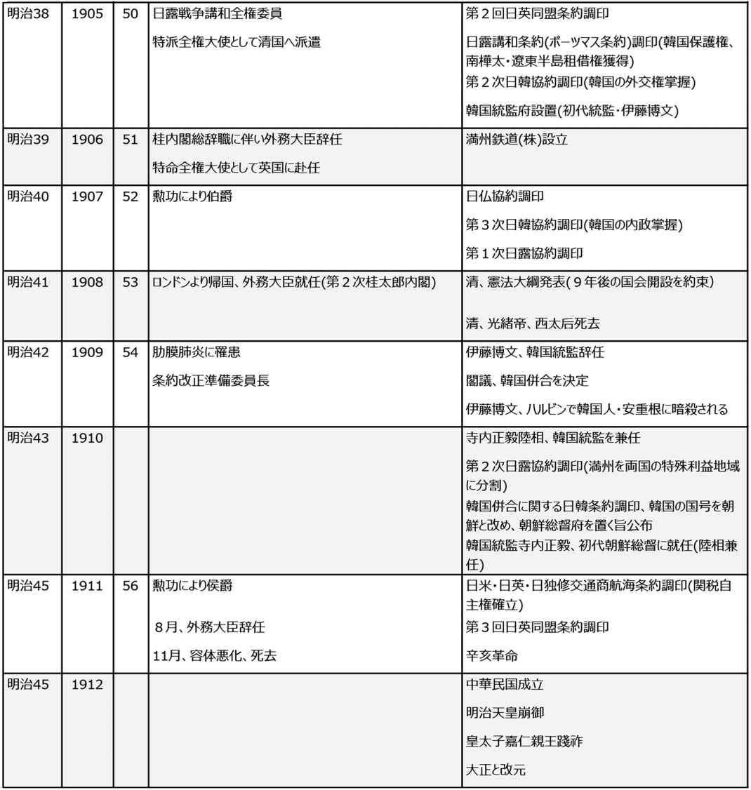

| [明治150周年記念] 名著から問題を読み解く! 明治から日本の未来を考える (2) 明治人物誌[2] (impress QuickBooks) | |
| 平田 周三 | |
| 株式会社インプレス (2018) | |
明治天皇
笠原英彦 著
中央公論新社
2006年6月
ISBN：9784121018496
目次紹介
第１章 幕末の政局と睦仁の降誕
第２章 激動の中の即位と明治維新
第３章 天皇権威確立の努力と挫折
第４章 維新の宰相、大久保の政治指導
第５章 伊藤首班の集団指導体制
第６章 立憲制の確立と皇室制度の形成
第７章 憲法の制定と立憲政治の開始
第８章 議会政治の進展と日露戦争
第９章 天皇の晩年と明治の終焉
原著者紹介
笠原英彦 (かさはら・ひでひこ)
笠原英彦氏は、1956年東京都生まれ。日本政治史、日本行政史、皇室典範を専門とする。現在、慶應義塾大学法学部教授。1985年、慶應義塾大学法学研究科博士課程修了。法学博士。1988～89年、2000～01年に米国スタンフォード大学訪問研究員。今上天皇の生前退位の問題について、政府から諮問を受け、意見を述べている。著書『皇室がなくなる日』でも提起しているように、皇位継承が困難になることを懸念する。
著書に『皇室がなくなる日―「生前退位」が突きつける皇位継承の危機』(新潮選書 2017年)、『象徴天皇制と皇位継承』(ちくま新書 2008年)、『歴代天皇総覧―皇位はどう継承されたか』(中公新書 2001年)などがある。
要旨
立憲君主制を国体としてかかげた明治にあって、天皇を中心に国を治める君主制か、憲法の下、議会を基盤とする政治制度が優先されるべきか、意見は二分した。立憲君主制そのものが、最初から矛盾をはらむものである。明治天皇は、その双方の攻防の中で翻弄され続けた。
大久保利通は、そのいずれにしても、天皇が女官に囲まれて育つ従来の宮中での生活を改めなければならないと考えた。軍の上に立つ質実剛健のイメージの天皇をつくりあげることを計画し、宮中の大改革に着手した。
明治天皇は、大久保が望んだように、勉学に励み、軍事教練への参加も好むなど、宮中は大きく変わった。何事も几帳面に執務を遂行せずにはおけない天皇は、政策についても具体的に意見を述べるようになり、政治においても次第に重きをなすようになった。しかし、立憲と君主制の意見の対立の狭間にあって、律儀な天皇は、理想となるべき天皇としていかにあるべきかに苦悩した。
普段は閣議の議論や政府の意見を、ただ聞くだけに終わるのだが、政府内で意見が対立すると、天皇に決断を仰ぐ。困ったときの神頼みとなる存在でもあった。とりわけ、内閣の組閣については、天皇の了解が求められた。開戦の裁定も天皇の役割だった。明治に起きた二度の大戦、日清戦争にも日露戦争にも天皇は反対だったが、国際情勢や時流の波には逆らうことはできない。日清戦争では、大本営が広島に設置され、天皇もそこで7カ月にわたり滞在した。その期間、周囲の勧めを断り、参謀室の隣にある粗末な居住場所で、戦地に赴いた兵士たちのことを思いやりながら質素な暮らしをした。贅沢を嫌い、我慢強い努力家であり、政府の期待に応えようと努める一方、庶民の生活にも心した情に富む天皇だった。
コメント
政治を自ら行う主体だった古代天皇、政治から外され、権利も富も持たない装飾的な存在となった武士の時代の天皇、公卿らとともに隔離された世界から立憲君主の政治の舞台へと引き出された明治天皇。そして、占領軍から戦争責任を問われて戦後にできた象徴天皇。天皇は時代の波に揺れ動かされながらもその存在を絶やすことなく今日に至っている。
天皇制が他国のような君主であれば、いつか新たな英雄に倒されていたであろう。天皇がいなければ、国内で覇権を争うことになる。そのことを知ってか、あるいは知らずか、日本人は天皇を崇拝してきた。それはわが国の長い歴史を通じて変わることはなかった。他国にはあまり例を見ない日本の伝統である。正義を求める日本人の象徴、あるいはある意味の宗教なのかもしれない。
縮約
１．激動の中の即位
公武合体
孝明天皇(明治天皇の父)は、ひどく洋夷 (西洋人)を嫌っていた。幕府の開国政策に真っ向から反対した。しかし、アメリカをはじめ欧米列強の開港、通商条約締結の要求がますます強まる中、幕府としては、必要とされる天皇の許しなしに修好通商条約を結ばなければならない状況にあった。尊王攘夷派は、幕府の暴挙だと攻撃する。
そうした混乱を解決するため、諸侯の間で公武合体論が強まった。幕府もこれを受け入れ、孝明天皇は妹の皇女和宮 と将軍家茂 の結婚を承諾した(1861年)。ここに公武合体は実現した。しかし、孝明天皇はあくまで攘夷・開港反対を条件とした。この矛盾に幕府首脳は苦悩し、形式的に攘夷を発令する。長州藩を中心に尊王攘夷派は活気づく。
尊王攘夷派に担がれた若手公家たちは、彼らと手を結んだ。孝明天皇は、朝議をも動かすようになった攘夷派の公家たちを抹殺する策に出た。8月18日のクーデターと呼ばれる(1863年)。幕府の命に従い関門海峡を通る米商船を砲撃した長州藩は一転して朝敵となった。朝廷との関係を失いたくない長州藩の志士たちは蛤御門で会津・薩摩の兵と衝突する。幕府に征長の命令が天皇から下された。
征長戦争の総参謀を任された西郷隆盛は、幕府軍艦奉行の勝海舟の助言を受けて、長州に恭順を説き、攻め込まなかった。その後、反乱の責任の自己処理を行った長州藩では奇兵隊を近代化し、再び尊王の火を復活させる一方、西郷らは坂本竜馬らの周旋で長州と手を結ぶ。もはや幕府は武力で倒すほかないとする意見が薩摩藩、長州藩を中心に高まる。その一方で、土佐藩の藩主ら諸侯の間に、幕府を加えた諸藩の合議制を押す意見が強まった。倒幕をめざす薩長の武士たちはこれに反発し、武力討伐に走る。朝廷の命を受けた幕府の第二次征長戦争は、長州の前に敗れた。1866年(慶応2年)7月、大阪城にあった将軍家茂は病死、そして孝明天皇もその年の暮れ崩御した。第二次征長は停止となり、追放されていた三条実美 、岩倉具視 らの公卿たちは復権した。
皇子誕生
1852年(嘉永5年)、孝明天皇に待望の皇子が生まれた。祐宮 と命名された。後の明治天皇である。祐宮は、病弱だった。祐宮のほか4人の皇子に恵まれたが、いずれも3歳になるまでに病気で亡くなっていただけに、心配された。それでも実母の中山慶子 は、厳しく育てた。幼年の頃は、かなりやんちゃで、勉強はあまり好きではなかったようだ。残された資料から、孝明天皇も祐宮の養育面に意を注いだ様子がうかがわれる。
1860年(万延元年)9月、親王宣下の儀が行われ、8歳の皇子祐宮は睦仁 と名乗る。1864年(元治元年)の蛤御門の変では、睦仁親王も御所から移動を余儀なくなれたが、さほどの影響はなかったようだ。
孝明天皇は1866年(慶応2年)12月、36歳という若さで亡くなった。激動の時代を苦悩の中で生きた。海外からの圧力を受ける幕府、幕府改革をめざす尊王攘夷という二つの力に翻弄されながらも攘夷を貫こうとした一生だった。睦仁親王はまだ14歳だった。
天皇即位と東京行幸
1867年(慶応3年)1月、睦仁親王は天皇に即位した(正式の即位式は翌年)。二条斉敬 が摂政となった。天皇の即位を受けて、祖父中山忠能 は宮中改革をめざした。大規模な女官の人事改革、美服着用の自粛などが実施された。天皇の周辺の状況は大きく変わったが、天皇はまだ政務には関わっていない。もっぱら学問の習得に励んでいた。
12月、王政復古が宣言された。幕府に代わり新たな政府が樹立された。天皇は太政官の執務室で毎日政務にあたることになった。天皇は真摯に職務を行った。政府首脳の岩倉具視と大久保利通の考えは、天皇に新たな使命を担わせ新政府の基礎を固めることだった。これに対して、君主制を望む中山忠能以下公家の面々は強く反発した。列強諸国はミカドの政権に期待を寄せた。
まだ戊辰戦争は続いていたが、天皇は小御所に出席して三職(総裁・議定・参与)らの論議を聞くなど政務をこなした。学問にも力が入り、『論語』の講読を終え、『孟子』に進んでいた。
1868年(慶応4年)8月に即位式が挙行された後、9月8日に明治と改元され、10月に東京への行幸が実現した。江戸城を皇居と定めて東京城と改称し、外国人も含め多くの人たちを引見した。孝明天皇と違い、明治天皇は西洋に関心を示した。
東京遷都
明治天皇は、行事で東京に2カ月滞在した後、京都に戻った。東京遷都がすでに予定されていたが、京都の人たちを安心させるためだった。再度の東京行幸は翌年3月となったが、今度はそのまま東京に住むこととなり、事実上の東京遷都となった。
大久保は、政治改革とともに、宮中大改革を進めた。天皇を取り巻く公家たちの一掃に腐心した。天皇を古色蒼然たる公家の因習から解き放ち、質実剛健で英邁な君主に育てあげ、国家の基軸に据えるのが目的だった。大久保は西郷隆盛に協力を要請、西郷は公家に代わり勇猛果敢な志士らを侍従に登用した。新参の侍従らは天皇の心身の鍛錬に力を入れた。天皇は進んで稽古の日課をこなすようになった。
乗馬の日課も加わり、講読書も『大学』『資治 通鑑 』など多彩な内容となり、西洋史、ドイツ語も教えられた。政務に対してはあくまで熱心で、午前5時には起床し、遅くとも午前8時半頃には学問所に出た。天皇は必ずしも才気あふれる人ではなかったが、大変な努力家だった。太政官規則が改定されてからは、天皇は日々午前10時より小御所代に出勤し、この間に3職からの諸案件について裁断を行った。御前会議も定例化し、天皇の日常業務が軌道に乗った。
西郷の朝鮮使節派遣問題
岩倉欧米使節団の留守政府を預かった三条実美と西郷だったが、征韓論が持ち上がり、板垣退助の出兵強硬論に同意しながらも西郷は、戦争の口実が立たないと、自らが使節として朝鮮に行き決着をつけることを提案、閣議でこれが認められた。三条からの奏上に、天皇は岩倉が帰国するまで待つよう指示した。岩倉一行が戻り、この問題が議論され、戦争に発展することを恐れる岩倉と大久保が西郷派遣に真っ向から反対するが、西郷はすでに決定したことだと三条を責め、板挟みになった三条は病に倒れた。天皇は岩倉に三条の代理を務めるよう命じた。
岩倉は天皇に朝鮮使節派遣を止めるよう奏上し、使節派遣中止が決定した。この時21歳だった天皇が自律的な判断を下しうるとは考えにくい。この決定に西郷は怒った。直ちに辞職して東京を去った。この時、天皇の親兵だった薩摩兵がなだれを打って西郷に従って離脱した。
西郷辞職の翌日、天皇は小御所代に篠原国幹 近衛局長官以下佐官将校クラスの集合を命じたが、篠原らはこれに応じようとしなかった。その後、天皇は再び140余名の近衛将校を招集したが、病気を理由に不参加の者が目立ち、まばらに集合した面々に天皇は憂慮の念を漏らした。西郷の周辺にいた将兵の多くがすでに帰郷の途についていた。西郷を特別に慕っていた明治天皇の困惑は大きかった。親兵の離散は、天皇の権威失墜を意味した。
1873年(明治6年)は、天皇にとって格別つらく悲しい年になった。皇居が火の不始末から全焼したほか、側室の葉室光子に皇子が授かり、橋本夏子が皇女をもうけたが、ともにまもなく夭折 した。哀しみのあまり、天皇はしだいに酒に溺れるようになる。しかし、悩みを誰にも言えない天皇だったが、相変わらず日課に励んだ。
２．大久保と天皇
大久保がめざした「君民共治」
西郷の朝鮮派遣問題で揺れ、事業展開を急ぐ各省と緊縮財政を掲げる大蔵省が対立した明治6年の政変で、政府は危機に遭遇していたが、大久保や木戸孝允、岩倉らの努力が実り、天皇親政の体制は徐々に確立されていった。宮中改革とともに、天皇の教育も格段の進展を見せ、天皇やその周辺は大きく変貌した。徴兵制度が実施され、天皇が国家軍隊の統率者であることが明示された。天皇自ら騎馬により連隊を指揮する訓練が日常化した。
大久保がめざす国体は天皇親政である。国家の統合や民衆の統合という目的に対して、新政府にとって天皇は重大な存在だった。民衆と天皇を近づけるため頻繁に行幸が行われた。これは天皇に広く国内のことを知ってもらうことも大きな狙いだった。明治天皇が行った行幸は97回にも及び、そのうち地方巡幸は60回を数えた。
大久保が目標にしたのは「君民共治」(立憲君主制)だった。それには、天皇親政が国家の基軸として不可欠だが、公議政治も充実させねばならない。これに対し、岩倉は天皇を絶対君主とする古代的発想を展開した。維新政府は、天皇親政と公議政治を二枚看板にしていたが、両者は本来相矛盾する。維新の2つの政治理念は二律背反的だった。
大久保は威厳と聡明な天皇が天皇制国家に不可欠とみていた。外面的装置だけでは構築できない。天皇自身の成熟度が大きくものをいう。そのための天皇の教育に特別の配慮をしていた。
天皇の輔導
学問の主体は儒学書や中国史書だった。儒学教育の面で多大の貢献をなしたのは漢学者の元田 永孚 だった。天皇もまた元田に心酔していた。元田は、皇道を中心として国体の尊厳や君徳の重要さを教えた。元田は頑迷な儒学者ではなく、西洋の科学を評価し、事実探求の精神を尊重した。
政務では、外国公使の引見や功臣の顕彰、陸海軍操練の視察などで多忙を極めた。和歌にも親しみ、多くの優れた御製を残している。この頃、天皇は不十分ながら政治的に覚醒しつつあった。
しかし、天皇はまだ政府の権力機構をいかに操作するかまでには至っていない。明治天皇が政治に眼を開かれるようになったのは1876年(明治9年)の御前評議ではなかったかと思われる。
西南戦争が起きた時、天皇は25歳を迎えていた。西郷を慕っていた天皇にとって、西郷を思いやる気持ちは強かったに違いない。天皇は引きこもりがちになり、政務を執らなくなっていた。
周囲の者が天皇に話すが、徒労に終わっていた。三条の必死の説得で、天皇は隔日、御学問所に出て政務にあたるようになった。天皇のことを憂慮していた木戸が亡くなってから、天皇輔導は後退した。宮中改革の必要を感じて大久保が動き、元田らの提案を受けて、宮廷内の職制改革を行い、天皇輔導強化のため侍補職が設けられた。
侍補となった元田らの工夫により、天皇もようやく政務と積極的に向き合うようになった。その一方、士族の反乱は西南戦争により終息に向かったが、農民らの騒乱は依然としてくすぶり続け、新政への反抗は歴然としていた。大久保ら政府首脳は天皇親政を口にはするが、実のところそれはあくまで建前でしかなかった。一方、元田ら宮中の考えは違っており、天皇親政の実質化を念頭に置いていた。しかし、政府と宮中を結ぶ役割の宮内省の幹部は非力が目だった。政府内で実力があり、天皇の輔導にも熱心だった大久保を宮内卿に迎える計画を侍補らは構想した。その矢先、紀尾井坂の変が起こり、大久保は帰らぬ人となった。1878年(明治11年)のことである。
３．皇室制度の確立
宮中と政府の確執
大久保の死により、政府と宮中の意見の対立が顕著になった。政府では大久保亡き後、伊藤博文が宰相の地位に就いた。宮中では元田に代わって佐々木高行が旗振り役になっていた。佐々木らは、天皇の親政の確実な実行と政府の親政が体裁だけのものである実情を説明、天皇に奮起を促した。やがて天皇の政治向きの発言が増え、旧薩摩、長州、土佐出身者の要職での偏重を批判し、政府高官の洋館新築にも苦言を呈するほどになった。侍補らの政治介入に、薩長提携の強化に走っていた伊藤だけでなく、岩倉も不快感を強めた。
一方で、巡幸を通じて、天皇の社会を見る目が養われ、次第に変貌を遂げていた。天皇は、洋学志向の学校教育を批判した。巡幸の際、生徒たちが祖国について無知であることに気づいた天皇は、岩倉を呼んで日本固有の道徳を涵養するよう命じた。この問題は、伊藤と佐々木の教育論争に発展した。
1879年(明治12年)、政府は侍補の廃止を決定した。政府は自らが本腰を入れて天皇輔導にあたることになった。
立憲国家への道
1880年(明治13年)に入ると、天皇の姿勢が変わった。積極的に閣議に出席し、政治と向き合うようになった。立憲君主制の確立をめざす政府は、それを良としながらも、もう一方の議会開設を進めなければならなかった。国会開設を求める世論は強まっていた。財政問題も深刻化していた。西南戦争後の経済混乱は改善の見通しが立たない状態の中、財政赤字が膨らみ、閣議では、外債を発行し、積極財政を主張する大隈重信らの面々と、これに反対する伊藤らの意見とで分裂した.1879年(明治12年)にグラント前米国大統領の訪日の折、大統領は天皇に外債の持つ危険性について述べたが、天皇はこれをよく記憶していた。天皇の判断もあり、結局伊藤らの財政緊縮論が採用された。
1881年(明治14年)、世情不安定の中、天皇は東北・北海道巡幸に出た。この頃は、天皇は観察力を養い、政治を深く理解し、洞察力も身につけるようになっていた。天皇の裁断は事実大きな影響力を持つようになり、天皇自身政治に積極的になってきた。
天皇は伊藤を最も信頼していたが、漸進派の伊藤は、内閣の輔弼 (手助け)を受けて政治には消極的な天皇を望んでいた。最も警戒したのは、天皇が宮中で側近からの進言を耳にして意思表示を示すことだった。
大日本帝国憲法と皇室典範
東北・北海道巡幸から帰った天皇は、大隈重信をめぐる騒動に決着をつけるとともに、騒動の争点である国会の召集を1890年(明治23年)にすることを正式に発表した。憲法調査のため欧州に行っていた伊藤が帰国した後、憲法の起草に取りかかり、内閣制度も樹立された。
伊藤らが天皇に上奏した内閣制度により、太政官制を廃止し、伊藤が総理大臣兼宮内大臣となり、薩長両派から主要閣僚が選出された。総理大臣は各大臣に対して大きな統制力を持つことになった。伊藤らは、天皇は君臨すれども統治せずという考え方に立っていた。後世の天皇機関説に近かった。これに強く反対したのは、井上毅 だった。井上は議院内閣制を想起し、天皇親政を強く主張していた。井上の考えが具現化するのは4年後のことである。総理大臣の権力が肥大化したため、薩長間の均衡が破れ、確執が生じた。
1886年(明治19年)から明治憲法の起草作業が本格化した。伊藤と井上(毅)が中心となって起草された憲法草案は、外国人顧問の意見も入れ、1888年(明治21年)4月に脱稿し、成案はすぐに天皇に上奏された。5月、開院された枢密院で審議が行われ、長期にわたった審議期間中、天皇は一度も欠席することはなかった。慎重な審議を経て、1889年(明治22年)大日本帝国憲法が発布となった。
併せて皇室典範も起草され、憲法とともに制定が決まった。皇室典範では、女帝の可否が問題になったが、結局、皇男子孫による皇位継承が決定となった。
４．立憲政治の開始
条約改正交渉
徳川幕府が米英仏などと結んだ不平等きわまる通商条約の改定は、新政府が悲願としてきたものだった。しかし、岩倉使節団をはじめ、歴代外相の交渉努力にもかかわらず、解決の糸口は見つからなかった。主な不平等は、(1)治外法権、(2)関税の一方的な取り決め、(3)最恵国待遇各国適用の3点だった。
政府は、この問題を困難視し、あいまいな態度をとり続けた。天皇の心配は高まり、改正交渉の方針決定を伊藤首相に強く求めたが、伊藤もなすべき方法がなかった。政権を継いだ黒田清隆は問題を大隈外相に任せた。1889年(明治22年)、大隈は秘密裡にアメリカと日米和親通商航海条約を調印した。しかし、その内容がロンドン・タイムズ紙に掲載され、初めてその内容を知った関係者は驚いた。天皇も初めて知った。関税問題では譲歩させたが、外国人に内地雑居を認め、大審院に外国出身の判事を登用することが定められており、世論は騒然となった。
大隈と黒田は改正断行を強く主張し、伊藤ら反対派と対立した。天皇が出席した閣議が開かれた。ここでも議論は紛糾したが、結論は出なかった。その後、大隈が暴漢に襲われて重傷を負い、終始大隈を支えてきた黒田は政権を投げ出した。調印した新条約を取り消す交渉について、黒田は天皇の裁定を仰ぎ、指名を受けた三条は条約改正の無期延期を実現した。
その後、条約改定は、日英通商航海条約が結ばれる1894年(明治27年)まで待たなければならなかった。
政党内閣と明治天皇
条約改定問題以降、天皇は政治に深く関わるようになり、政府の政策や人事にも介入することもしばしばだった。1890年(明治23年)11月、議会が開幕された。憲法上議会は、天皇の立法権の協賛機関とされていたが、政党の力は予想以上に影響力を持った。衆議院に安定した与党を持たない政府は思いのほか苦戦した。
1894年(明治27年)に起きた日清戦争で日本は勝利したものの、国民世論は三国干渉による賠償の少なさや、戦後の不況で政府批判を強め、政治は混乱していた。第2次伊藤内閣が1896年(明治29年)8月に辞任した後を引き受けた、山県、松方、そして再び伊藤が首相の座につくなど、目まぐるしく政権交代がなされた。内閣総理大臣の任命は天皇が行う。天皇は苦悩した。
民権運動はますます高まり、地方を抑えた政党が政治において勢力を強めていた。天皇は、政党が数を武器に立憲政治の本義を見失わせることを恐れていた。首相たちが政党と手を結びながら、政党に悩まされるという事態に不安を高めていた。伊藤は自ら新党結成を準備したが、思うようにいかず、首相辞任を決意した。驚いた天皇は、板垣と大隈を入閣させて伊藤が首相に留まるという収拾案を示したが、伊藤は受けなかった。天皇は山県を後継首班に推そうと思ったが山県がこの打診を断ったため、やむなく天皇は大隈に組閣を命じた。1898年(明治31年)、わが国初の政党内閣となった隈板 内閣が誕生した。しかし、隈板内閣は、すぐに内紛を起こし、第2次山県内閣が発足する。
藩閥首脳は、議院内閣制に向かうことを恐れ、政党政治に消極的だった天皇も、反政党的姿勢をとることにも躊躇していた。
日清戦争・日露戦争
1894年(明治27年)に日清戦争、1904年(明治37年)に日露戦争が起きた。10年の間に、勝利することの予想すら不確かだった大戦争に明治の政府は直面したのだった。宣戦布告は、天皇が行う。日清戦争の始まりにはさまざまな前提となる事件があったが、天皇は、この戦争に反対だった。儒教から学んだ天皇は、儒教の国と事を構えることを嫌ったのかもしれない。
日清戦争の間、天皇の信用が厚い伊藤がずっと傍にいた。大元帥だった天皇は、参謀本部が置かれた広島で執務を行った。出征した兵士のことを思い、天皇は軍議室のある質素な居所に、1894年9月から下関条約が締結される1895年4月まで7カ月以上滞在した。
満州、朝鮮問題をめぐるロシアとの交渉は難航していた。ロシアの強硬姿勢の前に、開戦やむなしという空気が広がった。ロシアに勝てるとは思えなかった。天皇は開戦の決断に苦しんだ。しかし、苦戦は強いられたが、世界の予想に反し戦況は日本に有利に傾いた。天皇は、戦勝の報告を聞いてもそれほど深い関心は示さなかったという。
1905年(明治38年)9月、ルーズベルト米大統領の仲介で講和条約が締結された。韓国と満州の利権、樺太の南部領有など日本のほぼ要望通りになったが、賠償金は得られなかった。そのことが経済界に打撃を与え、暴動が起きるほど国内に不満がたかまった。天皇は、「平和克復」について詔勅を下し、国民を諭した。
５．天皇の生涯
1912年(明治45年)7月30日、天皇は心臓麻痺のため崩御した。幼少の頃、蛤御門の変で御所からの避難を経験し、親政をかかげる新政府の求めから勉学に励み、質実剛健のイメージの天皇であらねばならないと考えた大久保の考えにより、乗馬や軍事教練に参加してたくましさを身につけた。侍補の熱心な教育により知識は増し、数多くの行幸により世間の実情につても理解を深めた。立憲君主制をかかげる政府は、親政にふさわしい天皇をつくるため、天皇が閣議に出席する機会を増やし、天皇は次第に政策や閣僚らの人間関係についても理解を深めた。
帝国憲法が発布され、国会が開催されてからは、天皇は積極的に政策について意見を述べるようになり、人事にも介入するほどになった。閣内で意見の対立が起きると、天皇に問題の奏上を行い、判断を仰ぐようになる。議会が開催となり、政党の意見や世論が政治に影響力を与え始めると、内閣は一方的に政策を決定して押し付けることが困難になり、客観的な判断、望ましい政策を天皇の裁断に頼るようになる。天皇の判断が重要さを増していった。
天皇は、立憲君主制における天皇の地位について悩んだ。気持ちとしては、藩閥政治家を好む一方、政党にも理解を示さねばならないと覚悟していた。よく言われる「名君」という呼び方はふさわしくない。理想的君主を求めて苦悩した明治天皇だった。
家族
明治天皇は、孝明天皇の第二子として誕生した。幼名は祐宮(のちの睦仁親王)。母は孝明天皇の側室、中山慶子である。孝明天皇は6人の皇子・皇女に恵まれたが、そのうち5人までが3歳を数えるまで生きられず、祐宮一人が残されていた。
明治天皇は、1868年(明治元年)一条美子 と結婚した。側室の間に5人の皇子を得たが、早くに病死し、残った皇子は嘉仁 (大正天皇)だけだった。嘉仁が生まれたのは1879年(明治12年)である。
嘉仁皇太子は、九条節子と結婚した。明治天皇の孫となる裕仁 (のちの昭和天皇)が、皇太子と節子 妃の間に1901年(明治34年)生まれた。
伊藤博文
知の政治家
瀧井一博 著
中央公論新社
2010年4月
ISBN：9784121020512
目次紹介
第１章 文明との出会い
第２章 立憲国家構想 －明治憲法制定という前史
第３章 1899年の憲法行脚
第４章 知の結社としての立憲政友会
第５章 明治国制の確立 －1907年の憲法改革
第６章 清末改革と伊藤博文
第７章 韓国統監の"ヤヌス"の顔
原著者紹介
瀧井一博 (たきい・かずひろ)
瀧井一博氏は、1967年福岡県生まれ。現在、国際日本文化研究センター教授である。京都大学大学院法学研究科博士後期課程終了。法学博士。大学院の博士課程に進んで以来、伊藤博文研究に取り組んできた。本書は、新書という形式ながら、15年に及ぶ研究の集大成だと本書のあとがきで述べている。一般向けの啓蒙書ではなく、文献を詳しく調べ、学術的研究書と同じ姿勢で書かれた。
伊藤博文といえば、のちの軍国主義に道を開いた悪しき明治憲法を作った張本人であり、韓国併合の推進者とされ、その評価は極めて低い。しかし、事実は、それとは正反対に、近代日本を代表するデモクラシーの政治家だったと瀧井氏は主張する。
要旨
伊藤博文は、長州で生まれ、松下村塾の門下生となり、吉田松陰から教えを受けた。幕末の志士を志すも、長州藩が用意したイギリスへの密留学のメンバーに選ばれたことにより、彼の人生は大きく変わった。その経験が買われて新政府の外国担当の官僚となり、岩倉使節団に副使として随行したことで、政府の中枢に立った。
大久保利通の暗殺後、内務卿を引き継ぎ、明治政府の完成に努力した。立憲君主制をめざし、明治14年には10年後の国会開催を天皇の意志として約束した。そのために必要な憲法研究に力を入れ、自ら1年にわたる欧州での憲法調査を踏まえて、大日本帝国憲法をつくった。薩長藩閥政治に対する反発の中、政党政治の時代が訪れる。議会での政党の攻撃を受けながらも、富国強兵路線を守った。日清、日露の大戦に勝利し、欧米列国からの圧力に耐えた。晩年は、韓国統監となるが、韓国の独立を支援する考えは変わらなかった。ハルビンで、韓国の壮士により暗殺された。
1885年、1892年、1898年、1900年と4度にわたり内閣総理大臣を務めた。それだけ長期にわたり功績を残した政治家でありながら、伊藤博文に対する歴史学者の評価は高くない。その理由を著者は、彼に哲学がなく、理想を持たず、時流に応じて変化する現実主義的政治家だったことをあげる。しかし、これだけ長く政治の中心にあって活躍したことは、卓越した政治力を証明するものである。伊藤博文に対する低い価値評価に対して、彼の果たした功績と思想を明らかにすることを本書は意図する。
コメント
本書の内容は、伝記的ではなく、伊藤博文の政治的理念と功績を文献で実証しながら明らかにしていくというものである。縮約にあたっては、これらの専門的な分析は割愛して、伊藤博文がどのような時代を生きたかを主に紹介した。無論、著者の省察に基づくもので、私見や他者の考えは入れていない。
長期にわたって政治活動を続けるには、権謀術策が必要だったし、柔軟な対応が不可欠だったこともうなずける。西郷隆盛、大久保利通、木戸孝允という維新の3傑のようなクリーンさには欠けるが、成熟していく明治の激動の時代の中にあって、その始まりから明治42年(明治の終わりが明治45年)、政治の中心で活動したことは驚きでしかない。やはり時代が伊藤を必要としたということであろう。明治天皇の信頼も厚かった。手さぐりの明治政府の始まりから、政党政治の時代に至るまで変化に対応していった。
縮約
１．伊藤博文のプロフィール
なぜ伊藤博文の評価は高くないのか
わが国の議会制度の成立を語るとき、伊藤博文の名を外すことはできない。大日本帝国憲法(明治憲法)を制定し、わが国最初の議会を開設した功労者であり、初代内閣総理大臣になった、伊藤博文の名を知らない日本人は少ないであろう。木戸孝允 、大久保利通、西郷隆盛という明治維新三傑の後を継いで明治を創り上げた。
にもかかわらず、歴史学、政治学の世界で、伊藤の功績はあまり高く評価されない。伊藤についての研究は少ない。日本近現代史の研究をリードする坂野潤治氏は、歴史小説家・司馬遼太郎氏との対談の中で、伊藤について次のように語った。坂野氏は「彼はいつも二つのはっきりした対立の間を動いている。明治史を書いても、伊藤博文の姿が出てこない」と言い、「やはり大政治家ですね。フレキシビリティそのもの」と司馬氏は答えている。
伊藤は、西南戦争後の大久保利通政権の確立の際は、大久保に従って開発独裁路線のお先棒を担いだ。大久保の没後、立憲運動が昂進するや、超然内閣主義の井上毅 が勧めるプロイセン型欽定憲法路線に同調して、憲法制定者として名を残した。議会開設後は、敵対する民権派の自由党と提携した。そして、政敵であるはずの大隈重信に初の政党内閣を作らせ、その後、伊藤自ら立憲政友会を創設して政党政治家へと身をひるがえす。このように時流に応じて変化する伊藤の姿勢について、坂野氏は政治家としての一貫性の欠如を指摘する。
司馬氏は、「伊藤には、西郷や木戸のような政治家としての哲学がなかった。それが同時代の人にも、後世の人にも彼の印象を弱くしている。だが、哲学性が薄かっただけに、政治というおそるべき権力の戦場における作戦能力が西郷や木戸よりも高かった」と言う。つまり、彼は哲学なき政略家、思想なき現実主義者だった。伊藤には、理想と現実が常に調和していたとも司馬氏は評している。
生い立ち
伊藤博文は、1841年(天保12年)、現在の山口県光市に生まれた。生家は農家だったが、家族全員が伊藤家の養子となり、侍の末席に連ねられた。大きな変化は、長州藩の命により江戸湾警護に派遣されたときに運命的な上司との出会いである。その上司の紹介で、吉田松陰に会い、松下村塾に入門を許された。松下村塾は、久坂玄瑞、高杉晋作、前原一誠、山県有朋といった幕末維新の志士たちを数多く育てた私塾である。
伊藤は、尊皇攘夷に基づく討幕思想に感化され、その実行部隊となった。しかし、松陰とは大きな気質の違いがあり、それが原因で、やがて伊藤は松蔭から離れていった。松陰は、伊藤の勉強熱心と快活さを認めたが、才覚には劣るとみていた。しかし、交渉能力に長けていることは認めており、将来は能吏になるかもしれないと思ったであろう。伊藤は、過激な精神主義者の松蔭よりも、冷静に日本の行く末を熟慮し、そのための政略を重んじた長井雅楽の姿勢に共感していた。ここに伊藤という政治的個性が示されている。伊藤の独自性は、松蔭の影響から脱却した時点から始まった。
イギリス留学
次に大きな転機となったのが、藩政府が用意したイギリスへの密航だった。伊藤がイギリスへ向けて旅立ったのは1863年(文久3年)だった。攘夷運動たけなわのこの時期、長州藩では西洋へ藩士を留学させる計画が密かに進められていた。当時、海外への渡航は国禁だった。しかし、長州藩では、藩政の中枢にあった周布政之助がイギリスに人を送って学ばせることの必要性を進言した。彼は、尊王攘夷は日本の武を顕示するだけであって、のちの世には各国との往来が盛んになり、西洋の事情を熟知していなければわが国にとって一大不利益になると考えた。派遣されたのは、野村弥吉、山尾庸三、井上馨 、遠藤謹助、そして伊藤の5人である。これはわが国初の西洋留学だった。
松蔭は、浦賀停泊中のペリーの艦船に乗り込んで洋行を試みたが、幕府に捕らえられ、最後には死刑になった。伊藤は早くから海外留学の志を表明していた。
ロンドンに渡り、ロンドン大学の University College に入学した。5人は、明治維新後の日本の近代国家建設に、それぞれ独自の足跡を残した。山尾が工学教育の発展に尽力したほか、障害者教育の整備にも従事した。遠藤は大蔵官僚として近代的貨幣制度の整備に尽力した。野村(名を井上勝に改めた)は、新橋－横浜間の路線をはじめ多くの鉄道建設を指導した。井上(馨)と伊藤は、元老政治家として名を残した。
ロンドン滞在中、井上と伊藤は、『タイムズ』紙上に長州藩による外国船砲撃や薩英戦争の記事を見て大いに驚き、藩の攘夷政策の無益であることを説得するために急ぎ帰国した。留学予定は3年だったが、わずか半年で切り上げた。
しかし、留学を早々に切り上げて帰国したことは、二人にとって僥倖だった。彼らのロンドンで得た知見は、藩を説得するのに役立った。伊藤の名は藩政のなかで大いに声望を高めた。もしこの時点で帰国せず、イギリスにとどまって勉学を続けていたら、彼らは一介のテクノクラートで終わっていたかもしれない。
記録に残っている伊藤の英語の文章は、複雑な言い回しは見られないものの、伝えたいことを実直にかつ丁寧に綴っておりきわめて読みやすい。伊藤は英語能力に富んだ稀有な政治家だった。西洋の知識を得て、身分や藩という所与の狭い秩序を超脱し、より広い世界的視野を身につけた。
明治新政府での登用
1868年(慶応4年・明治元年)、伊藤は新政府の外国事務掛を命じられた。長州藩で外国通として名をなしていた伊藤は、新政府においても外務の仕事からスタートした。同年、初代の兵庫県知事に任じられた。開港された神戸は、税関業務や居留地監督を請け負う日本外交の最前線だった。そこでも、彼は新たな知見と経験を得た。
伊藤は外務の任務中も、新政府の制度構想に思いを巡らせていた。国の「組織」、すなわち制度こそが、東洋と西洋を分かつ指標だというのが伊藤の考えであった。制度とは、国に生命を与え、これを動かすものである。伊藤にとって制度とは、単に諸個人の自由を枠付けるものだけでなく、調和を与えて、より高次の国家的活動を実現するためのものだった。
明治初年の伊藤は、アメリカ建国の事歴に魅せられ、アメリカをモデルとする制度を構想していた。1870年(明治3年)に彼はアメリカに行った。当時、大蔵少輔 だった彼は、財政幣制の調査のためのアメリカ視察を願い出て派遣されたのである。このアメリカでの調査は、彼の制度に関する知識と国家の考えを飛躍させた。
このときの調査がきっかけとなって、翌年、わが国初の貨幣法である新貨条例が制定された。これにより、金本位制を採用することが決まった。銀本位制を主軸とする東アジアの経済圏のなかにあって、日本が最初に欧米流の金本位国に移行したのは注目される。しかし、金本位制の導入は、あまりに急進的だった。当時の伊藤には、まだ志士の性格を持つ新進官僚だった。金の準備不足などもあって、金本位制は失敗した。旧来の銀本位制が続いた。
しかし、彼は理想主義者ではなかった。それとは対照的な現実判断力があり、政治的社会的状況を見据えながら、漸進的に改革を進めていくという立法者としてのスタンスを持っていた。
岩倉使節団に随行
1871年(明治4年)に、岩倉具視を団長とする使節団がアメリカおよびヨーロッパへと出発した。それは2年を超す長期の視察だった。これに、木戸孝允、大久保利通ら、新政府の重鎮が加わった。この計画を立てた伊藤は、副使として参加した。主要参加者の中で、海外経験があったのは、伊藤だけだった。英語を使っての目立つパフォーマンスは、他のリーダーによい印象を与えなかった。さらに、アメリカとの条約改正交渉で、大きなミスをした。大久保は強く責めなかったが、同藩出身で先輩の木戸との間にしこりを残した。しかし、そのことが、伊藤の得意満面の鼻を折り、おとなしくさせるとともに、急進主義から漸進主義に変えた。
アメリカとヨーロッパ各地を訪問した一行には、日本がこのような近代化に追いつくことは難しいのではないかという悲観論が広がった。しかし、伊藤は、西洋文明恐れるに足らずという確信を持っていた。その根拠は、維新以来の極めて短期間に実施した廃藩置県などの制度改革の成功だった。
２．立憲国家構想
漸進主義
この長期の海外視察を目的とする使節団の中心的存在だった木戸も大久保も、ともに立憲体制の採用が不可欠の課題とみなしていた。二人はそれぞれ憲法意見書を書いた。意見の違いはあったが、「民主」と「漸進」という点で共通が見られる。しかし、彼らが自らこの問題に着手することはなかった。大久保は制度構築よりも殖産興業の指導に専念することを望んだ。木戸は帰国直後から心身の不調に悩まされ、持続的に執務に携わることが困難だった。両人の意を受けて、伊藤が立憲制度導入のエキスパートとして登場することになる。
地方官を召集して下院議会とし、皇族華族による天皇の諮問機関を若干拡張して上院とするという案が固まった。1875年(明治8年)、漸次立憲政体を実現する天皇による宣言が行われて、地方官会議と元老院が創設された。しかし、肝心の憲法の制定は未着手のままだった。西南戦争、木戸の病没、大久保の暗殺と事件が続き、体制の動揺が起こったからである。政府内部の立憲運動が覚醒されてきたのは1880年(明治13年)になってからである。この年、天皇は各参議に立憲制度導入についての意見書の作成を命じた。
大隈重信との対立
これを受けて伊藤は意見をまとめた。彼の主張は、元老院の拡張論だったが、木戸・大久保の考えを引き継いだ漸進主義だった。しかし、板垣退助を中心に、国会開設を求める自由民権派の動きが盛り上がっていた。
政府内部で、そのような時勢に鋭敏だったのが参議の大隈重信だった。大隈は意見書を出さなかったが、天皇から催促を受け、1881年(明治14年)3月になって提出した。その内容が大問題となった。イギリス流議院内閣制を主張するもので、翌年には国政選挙を行い、2年後に国会を開設するという急進論が述べられていた。しかも、イギリスで行われている、選挙で多数を獲得した政党が内閣を組織するという政党政治が掲げられていた。大隈はそれを伊藤らに相談せず、直接、天皇に上奏しようとした。
岩倉は、これを法制官僚だった井上毅に見せ、意見書を書くよう求めた。井上の意見書は、大隈のものとは対照的だった。ドイツのプロイセンをモデルとする欽定憲法体制がその内容だった。広範な天皇の権利が規定されていた。
伊藤は大隈を閣僚から罷免した。その翌日、国会開設についての勅諭が発表された。
欧州での憲法調査
天皇の勅諭は、1890年(明治23年)を期して国会を開くことを内容とし、憲法制定と国会開設に明確なタイムリミットが示された。そしてその憲法の内容は、ドイツ(プロイセン)に倣うという方針が採られた。
翌年の1882年(明治15年)3月、伊藤は憲法調査のため、欧州に向かった。滞在期間は1年半に及んだ。一国のトップ政治家が調査のため国政を留守にすることには、当時強い疑問が向けられた。この調査は、天皇が直接伊藤に命じたとされる。目的は憲法そのものではなく、国の組織や実情について調べることにあった。
伊藤はベルリン大学やウィーン大学で、著名な学者に教えを乞うた。とくに強い影響を受けたのは、ウィーン大学の国家学教授ローレンツ・フォン・シュタインだった。当時のドイツでは、議会運営について、さまざまな問題に直面しており、その苦い経験から議会制度に対して多くの批判意見がなされていた。シュタインは、議会制度は国民の政治参加の原理として不可欠なシステムだが、それは利害関心によって左右される安定性を欠いた政治しか行えない。これに対して議会制度を補完して国家の公共的利益を実現するシステムとして行政が必要である、と説く。伊藤は、この国家理論に感服した。
最後はロンドンに赴き、約2カ月そこでも精力的に調査を行った。彼は、1883年(明治16年)8月に帰国した。彼は、憲法制定に大きな自信を持った。
明治憲法発布
伊藤の関心は、シュタインが教えた国家の仕組みだった。シュタインの学説の特色をなすのは、国家と社会の二元論である。それによれば、社会が営利を中心とする個別的な特殊利益によって構成されるのに対し、国家は共同体全体の普遍的利益の体現者とされる。換言すれば、欲望の体系に他ならない人間社会の中から公的な価値を救出するために、私的利害関心から中立的な国家の活動が不可欠なのである。伊藤は、民間レベルにおける利害の自由競争を担保するかたわらで、そこからは冠絶した政府のあり方が望ましいと考えた。これは超然主義の主張に他ならない。
伊藤は帰国後、行政組織の改革に着手した。天皇、あるいは天皇を担ぐ勢力が直接執政を行うことを恐れた。天皇親政の動きを封じ込めようとする一方、行政を強化しなければならなかった。
1885年(明治18年)、行政機構の改革が行われ、内閣制度が導入された。その初代内閣総理大臣に伊藤が就任した。それまで、大臣になれるのは、皇族・華族に限られていた。新しい制度は、身分に関係なく、国民であれば誰もが大臣の職に就くことを形式上可能にしたのである。
大日本帝国憲法、いわゆる明治憲法は、1889年(明治22年)2月11日に発布された。大隈が提唱したイギリス・モデルは排斥され、天皇に神権的な絶対権力を与えるもので、プロイセン憲法が基本となっている。
若手知識人の台頭
伊藤にとって、政敵は大隈だった。大隈は伊藤を凌駕する憲法構想・制度構想を展開した。それは「制度の政治家」伊藤の根底を揺るがすに足るものだった。だがそれだけではない。大熊の構想は、「知の政治家」伊藤にとっても大きな危機を意味していた。このとき大隈が、伊藤の株を奪うかたちで知識人の糾合と制度化を着々と進めていたからである。
大隈は官にあったときから、優秀な知識人を自己の配下に集め、影響力の増大に努めていた。多くの優秀な少壮官僚がそこにはいた。これら若き俊秀な知識人は、ほとんどが福沢諭吉の慶応義塾で学び、大隈の斡旋で政府に奉職が決まったという経歴を持つ。イギリス流政党政治の導入を考えていた大隈は、その地ならしとして、慶応義塾出身の青年書生を自分の構想を実現するためのスタッフとして活用しようとしていたのである。しかし、1881年・明治14年政変により、大隈は失脚して野に下った。
野に放たれた大隈一派は、立憲改進党と東京専門学校(後の早稲田大学)を設立し、公然と政府との対決色を強めた。そこに企図されているのは、私立学校で政治的人材を養成し、それを政党にリクルートしていくというシステムに他ならない。このことは、藩閥政府にとって大きな脅威だった。
伊藤にとっての憂慮の種は、外のみならず内にもあった。明治14年政変は、国家構想の覇権争いという性格を持つが、つとに指摘されているように、そこでの真の主役は伊藤や大隈ではなく、井上毅や小野梓といった西欧の国家論・政治理論を身につけた知識人だった。彼らの台頭を前にして、伊藤は、自己の権力の安定とリーダーシップの強化のためにも、これら新興知識人をしのぐほどに自らが立憲政治について把握しておく必要を感じていた。
この頃、政府側にはすでにプロイセン型立憲君主制に精通し、それを唱道していた知恵者井上毅がいた。彼こそ大隈の急進論を破砕し、伊藤を動かした政府のイデオローグである。しかし、井上の存在は伊藤にとって決して安心できるものではなかった。井上はしばしば伊藤の頭越しに行動し、岩倉や井上馨らに命令するような行動をみせていたからである。井上毅は、自己の抱くプロイセン流憲法構想へ向けて政府全体をシフトさせようとしていた。伊藤さえも、彼のプロイセン型憲法構想実現のための先兵に祭り上げられそうだった。このような井上の行動は、官僚としての分を超えたものと伊藤の目には映ったであろう。知識人の政治的突出にも伊藤は心を砕かなければならなかったのである。
３．明治国制の確立
明治憲法の見直し
伊藤の立憲政治の理念は、国民の政治的(政策的)関心を高めること、そして国民の政治参加により、国家の政治的統合力を強めて国力を活性化させることだった。そのためには、既存の政党による競争や闘争という行動原理ではなく、妥協と譲歩こそが政党活動の指針でなければならなかった。政党は、重要な人材源をプールしておく場所というのが彼の認識だった。
伊藤は、立憲政治の精神である妥協と調和の担い手として、1900年(明治33年)、立憲政友会を創設し、初代総裁の座に就いた。それに先立ち、1899年(明治32年)に、宮中に帝室制度調査局を設置し、その初代総裁にもなった。これは、皇室制度見直しのための調査・審議機関として設立されたものである。彼は現行の皇室制度の不備の補正について、天皇に上奏していた。憲法が最終的に完成していないというのが彼の思いだった。憲法と皇室典範がそれぞれ独立して存在する二元的国法秩序を、皇室を国家の機関として位置づけ直すことがその目的とされた。
これは国家と皇室を分離するという従来の国制原理を改め、国家のなかの重要な機関として皇室を位置づけるというものであった。しかし、それは天皇の政治的役割を強調し、主権者として政治を行うことを意図したわけではなかった。むしろまったく逆である。そこで志向されていたのは、天皇主権の確立というよりも、皇位や皇室をより一層制度化することであり、国家機関化であったと理解される。天皇および皇室の統治を形式化することによって、政治的実権から遠ざけることが本来の狙いだったのである。政治上の責任主体は、大臣であり、その集合体としての内閣である。
公式令をめぐる軍部との対立
明治憲法が施行されて20年近くが経っていた。国制を取り巻く内外の状況は様変わりし、立憲体制は大きな曲がり角に来ていたのである。政党勢力が台頭し、議会政治はこの間着実に定着していた。だが一方で、日清・日露の両戦役を通じて、陸海軍は強力となり、台湾や朝鮮の支配権の獲得によって、国家の統治権力の分散という問題も生じていた。首相の権限が弱体化していた。これを改めるため、内閣のもとに統治権を集約し、国制の分化を防止することが、調査局による制度設計の本旨であったと考えられる。
皇室制度の国制化はそのひとこまに他ならない。直接この目的のために策定されたのが、公式令とそれに伴う内閣官制の改定だった。公式令とは、国家の発するあらゆる公文の公布形式を定め、国法秩序の体系的統一をもたらす重要な憲法付属法である。公式令は、1907年(明治40年)公布となる。
公式令制定の際、調査局が念頭に置いていたのは軍部だった。公式令は内閣総理大臣に国政の統制権限を強化するものだった。しかし、軍令機関が大元帥たる天皇に戦況や軍の指揮命令について直接報告することを保障していた。軍務への文官や議会の干渉を嫌忌する軍は、平時における軍の編制や組織運営にまで拡大解釈した。
伊藤は、内閣総理大臣の権限強化に毅然とした態度で臨み、軍の動きにも厳しい姿勢をとっていた。しかし、公式令によりその権力が減じられることを恐れた軍部は、軍の立場を代表する山県有朋に伊藤と交渉させた。この会談後、公式令が統帥事項と行政を判然と区別させた。これにより、軍は、内閣の了解なく、陸海軍大臣の副署のみで軍令を出すことが可能になった。
なぜ伊藤が山県との会談で、一方的な譲歩をしたのか疑問が残る。天皇に対しても思うまま話せた伊藤が、山県に対してはなす術もなく一方的に妥協を迫られたとは考えられない。この問題については、当時の日本の海外進出のことを考慮しなければ理解できない。
伊藤は国民の活力こそ国家独立の基軸との見解を表明していた。彼にとって制度とは何よりも国家と国民をつなぐことによって、両者に活気の連鎖をもたらすものだった。国民の社会的、経済的活動を振興する一方、国民の政治参加を進めることが伊藤の描いた制度だった。明治憲法発布後、伊藤はその確立に尽力し、立憲政友会の創設もその一環だったと考えられる。
韓国統監に就任
1907年(明治40年)、韓国皇帝高宗は、ハーグ平和会議に密使を派遣して日本の韓国統治の不当性を国際社会に訴えようとした。しかし、この目論見は不発に終わり、初代韓国統監の伊藤をはじめ、日本政府の逆鱗に触れ、高宗は退位を余儀なくされた。この結果、第3次日韓協約が締結され、これによって法令制定や重要な行政処分の承認権、官吏の任免権など統監による幅広い内政の指導監督権限が認められた。さらに韓国軍隊も解散され、日本は実質的に韓国を併合したとされる。
こうしたことから、歴史学界においても、「伊藤＝韓国併合の先兵」とする固定観念を前提とした論法は依然として残っている。しかし、当時、伊藤は憲法改革に関する帝室制度調査局の総裁でもあった。その彼がなぜ韓国統監に就いていたのか。
伊藤は、軍部を規制する実践の場として、韓国統治を位置づけていたと考えられる(原著者・瀧井一博の説)。伊藤は、公式令に基づいて軍事行政を内閣が一元的に管理する体制を実現しえなかった。それを韓国において実現したかったのではないか。
伊藤自らが起草した統監府及理事庁官制の第4条では、統監には韓国に駐留する軍隊の司令官に対する指揮命令権が認められた。保護国化を受けて反日の気運が高まっていた当時の韓国の状況を考えれば、当然の措置であったろう。国内にあっては、軍は統帥権の独立を主張して、内閣を通さず直接天皇に報告、命令を受ける体制を確立していた。内閣による軍のコントロールを望んでいた伊藤は、韓国でその実現を図った。
これに軍は当然反対したが、1906年(明治39年)1月、明治天皇は寺内正毅陸相と大山巌参謀総長に、統監に韓国守備軍を使用する権限を付与する旨の勅語を授けた。かくして、明治憲法下で唯一、文官が軍隊の指揮権を持つ官職ができたのである。
伊藤は、満州を日本の勢力下に置こうとする動きに断固反対だった。その頃、桂太郎内閣では、外務大臣の小村寿太郎が韓国の併合を提案していた。伊藤はこれにも反対の意見を持っていた。桂と小村が最終的に伊藤と直談判を決意して伊藤に面会したとき、彼らの予想に反し、伊藤はあっさりと併合を承諾したのである。なぜ伊藤は、反対していた韓国併合を急に了承したのだろうか。併合すれば国内と同一の扱いになり、軍部の文官統制への道が開けると考えたのかもしれない(韓国での統監が軍隊を動かせた)。
軍部は満州の支配を狙っていた。伊藤は、これだけは止めなければならないと考えた。韓国の併合によって、満州への軍事力拡大を防止することを意図していたのだと思われる。
韓国併合後も、伊藤は、韓国人による責任内閣の構築を構想していた。独立の植民地議会を設け、最大限の自治を保障する考えだった。韓国の既存の秩序や価値観を可能な限り尊重しつつ、漸進的に文明国への転換を成し遂げようとしていた。しかし、日本では、議会制度の定着という成果を収めた漸進主義だったが、韓国においては伊藤の統治は迷走した。韓国民のナショナリズムの高まりはとどまるところを知らず、抗日運動は衰えをみせなかった。さすがの伊藤も手詰まり感を覚えていた。
1909年(明治42年)10月26日、ハルビンでの銃声とともに、伊藤が韓国について描いた夢は消え去った。
４．伊藤博文の思想
政党内閣
伊藤の思想は、観念的なナショナリズムではなかった。日本は文明国でなければならないという意識だった。文明国とは、知的水準が高く、権利の保障された人民によって構成される国家であった。伊藤にとって、知的に開花された国民の存在が文明国の必要条件だったのである。
一方、現実的には、政党は時々の利害によって動くものであり、内閣は国家的見地から公平な施政を行わねばならないという考えを持っていた。政党内閣を拒絶した。国民はまだ十分な知を持つには至っていないというのが伊藤の考えだった。にもかかわらず、第4次伊藤内閣は、立憲政友会を基盤とする内閣を誕生させた。しかし、組閣して1年未満で、党内の紛争により終わった。
政党を中心とする議会があっても、内閣はそれとは切り離して行政を行う超然内閣をめざしていた伊藤の政党内閣実現について、当時も、また現在でも、伊藤のあいまいさに対する批判は強い。しかし、彼のこうしたフレキシビリティが長期にわたり政界のトップに君臨できた理由でもある。同じような矛盾は、韓国の併合でも見られた。強く韓国併合に反対していたにもかかわらず、土壇場でこれに賛成し、韓国の初代統監に就任した。
こうした彼の対立する二つの考えの間を動く伊藤の思想と行動は、とかく誤解されやすい。しかし、彼には、最終的にゆるぎない国家を創るという理想があった。それは、天皇を主体としながらも、行政が中心となって国家の運営にあたり、議会はそのための人材のプールであり、国民がみな国政に参加できるという形だった。それらを貫くものが協調と妥協を本筋とする知であった。
伊藤が、岩倉使節団に参加して以来、まったく変わらなかったのは、急進的な変革を求めない漸進主義だった。現実の中に機会を見出して漸進させていくという手堅い手法は、政治的な安定性をもたらすものであったが、思想的な明確さを隠す原因ともなった。そこには、彼の現実主義者の姿がある。
彼の理想は実現せぬまま終わった。しかし、伊藤博文の生き様は、明治の栄光と苦悩でびっしり埋め尽くされている。
大隈重信
民意と統治の相克
真辺将之 著
中央公論新社
2017年2月
ISBN：9784120049392
目次紹介
第１章 近代西洋との遭遇
第２章 近代国家日本の設計
第３章 「立憲の政は政党の政なり」
第４章 漸進主義路線のゆくえ
第５章 理念と権力のはざまで
第６章 政党指導の混迷
第７章 日本の世界的使命
第８章 世界大戦の風雲のなかで
第９章 国民による政治と世界平和を求めて
原著者紹介
真辺将之 (まなべ・まさゆき)
真辺将之氏は歴史学者。専門は日本近現代史。現在、早稲田大学文学学術院教授。1973年栃木県生まれ、千葉県出身。早稲田大学大学院文学研究科後期博士課程満期退学。文学博士。早稲田大学経済学部に入るも、歴史学と出会い、歴史研究の道に入る。博士論文は、明治の啓蒙家で、福沢諭吉らと活動を共にした西村茂樹をテーマにした。西村は、西洋学者でありながら、西洋化を憂慮し、儒教による道徳などを重視する反西洋化を唱えた。
佐賀市大隈記念館所蔵資料調査員、早稲田大学大学史資料センター勤務等を経て、早稲田大学文学学術院准教授となり、現在に至る。著書に、『西村茂樹研究』(思文閣出版)、『東京専門学校の研究』(早稲田大学出版部)、『近代日本の政党と社会』(共著、日本経済評論社)などがある。
要旨
従来、大隈は、国民の味方である民衆政治家のイメージで語られることが多かった。しかし、本書では、明治初期の大隈が民意の尊重よりも中央集権的国家の樹立を至上命題にしていたことや、明治14年の政変は、自由民権運動の盛り上がりに共感していた大隈が薩長藩閥の打倒を企てたものではなく、あくまで政府内部進歩派による主導権確立が目的であった。大隈が最初から民衆政治家と呼べる存在だったわけではないとする。
大隈は、明治維新に貢献のなかった佐賀藩の下級藩士でありながら、いち早く明治新政府に出仕し、若くして維新の大物たちと一緒に参議になった。しかし、大隈の真骨頂は、実務行政の手腕にあった。外交問題の処理で見せた実績に加えて、大蔵省に移ってからは財政の問題でも並外れた成果をあげた。
大隈は、藩という母体がなかっただけに個人プレーに走るきらいがあり、憎まれることが多かった。明治14年政変で政府から追い出され、政府要人たちが嫌った政党を立ち上げた。板垣退助と競いながら、わが国における政党政治の確立に大きく貢献することになる。
政府と政党とを行き来しながら、政党内閣の時代をめざしたが、伊藤博文から首班指名されて、初の政党内閣の首相に就任した。しかし、副総理の板垣と合同して設立した憲政党の内紛のため、わずか4カ月の短命に終わった。
在野にあっては、今日の早稲田大学の前身である東京専門学校の設立をはじめ、新聞を発行し、「文明運動」と呼ばれる文化的活動に尽くした。
そしてもはや政治への復帰はないと思っていた矢先、総理大臣に復帰することになり、1914年(大正3年)、第二次大隈内閣を組閣した。大隈はすでに76歳に達していた。明治から大正へと時代は移る最中であり、薩長閥の元老たちももはや力を失いつつあった。政党も新たな活動期を迎え、軍部が政治に力を及ぼす時代になっていた。
首相在任中、第一次世界大戦が勃発し、日本もイギリスとの同盟関係もあり、参戦した。中国に対する日本の姿勢は、これを機に強硬さを増していた。国民がそのような対外強硬姿勢を望む空気が広がり、大隈は中国に対して21個条の強引な要求をつきつける。かつての寛容さと平和を求める大隈の姿が消えた。
大隈は、高齢を理由に辞職を希望したが、後継問題で元老たちから慰留され、信頼の厚かった大正天皇からも続投を求められた。1916年(大正5年)、首相を辞任した後は、平和の重要性を主張し、日本人のナショナリズム昂揚を批判するなどの意見を発表し、外国人も含む多くの人たちに日本の進むべき道を語った。大正天皇の相談相手となり、裕仁皇太子の摂政就任にも協力した。
1921年(大正10年)夏、体調を崩し、以後病は重くなり、翌年初め、84年の波瀾に満ちた人生を閉じた。
コメント
大隈重信については、気が多く、独走し、人と組まず、ミスが多いなどいまひとつ信頼が置けない政治家というイメージと、早稲田大学を創設し、政財界の人材を多く育成することに貢献した人物像とがダブっていたが、この本を読んで、大隈という人間像と思想の本脈をつかむことができた。
日本がどうあらねばならないかということに、ずっとブレない理念を持っていた。発想力に富み、実行力に長けており、すぐに実現したくなる積極性格は、ガードを甘くし、打たれて挫折させる。しかし、倒れても、怨んだり、悔やんだりせず、常に明るく、楽天的であり、不思議とまたトップに返り咲く復元力のある人だった。
80歳を超えてなお、第一線で言論活動を展開し、日本人のおごりを諭し、日本の進むべき道を示した見識と予知力には敬服せざるを得ない。来るべき太平洋戦争を予想し、議会で戦艦建造や軍隊増員のための予算問題が紛糾していた当時、将来の戦争は、軍艦も兵隊も半分で済むようになり、航空機が重要になると述べた。航空機については、帝国飛行協会会長を務めたときに得た最新の知識と情報をもとにした意見であろう。
伊藤博文のような権謀術策は用いず、自由民権の板倉退助とは違い近代日本の確かなビジョンを持っており、山県有朋のような陰鬱な頑固さがなかった。論壇においても、晩年は福沢諭吉の論を越えていたように思われる。
縮約
１．若くして実務も長けていた
勉学
1838年(天保9年)2月、大隈重信は佐賀城下に生まれた。幼名は八太郎。大隈家は知行300石、年貢収入120石の上級武士の家柄だった。幼い頃はあまり賢い子ではなかったが、母は本を読むのが好きで、『太平記』や『水滸伝』などの話を聞かせるなど、わが子の学問に力を入れた。12歳の時、父が剣道の稽古中に脳分血で亡くなった。母はいっそう子供の教育に力を入れ、父が残した借財を整理して一家を支えた。
佐賀藩には、藩校弘道館があり、初級学校の外生寮と上級学校の内生寮に分かれていた。藩士の子弟は6～7歳になると外生寮に入ることになっていた。内生寮に進む頃から、大隈は次第に藩校の教育方針に不満を持つようになっていた。朱子学を重視して他の学派を排斥したこと、成績評価主義、そして『葉隠』によって佐賀藩を至上とする考えを植えつけようとしていたことに反感を抱いた。しかし、実際には長崎に近い佐賀藩では、蘭学にも力を入れていた。
内生寮で事件が起きた。南寮と北寮で争いごとが起き、その巻き添えで大隈は退学処分になった。しかし、藩は大隈を蘭学寮に入れた。蘭学寮で大隈は最初物理学に興味を示したが、次第に歴史や政治に関する書物を好んで読むようになった。大隈の海外についての知識を飛躍的に伸ばすとともに、開国進取の姿勢を形づくっていった。
ペリーが浦賀に艦隊を率いて現れたのは、1853年(嘉永6年)のことで、大隈が内生寮に入学した年だった。その後、先輩や仲間から尊王や攘夷のことなどについて聞き、愛国心を芽生えさせていった。
藩の富国策で貿易を経験
大隈は蘭学寮の教官に任命された。1860年(万延元年)の遣米使節団に随行した佐賀藩士5名が帰国し、彼らから話を聞くことができた。次第に蘭学から離れ、英学に惹きつけられるようになった。将来は、英語が大事になると聞かされ、彼らから英語の手ほどきを受けた。
蘭学校で教官を務めながら、藩政改革にも関心を持ち、藩の富国策について提案した。それが認められ、大隈は藩金の運用利殖と貿易に関与するようになった。北海道の釧路の東海岸一帯の払い下げを受けて昆布を収集して流通させ、その一方で箱館では佐賀の国産品を販売するという貿易策は大成功した。商人と往来して経済活動に従事した経験は、のちに参議・大蔵卿として経済に深く関わっていくうえで、貴重な財産になった。
藩の富国策に奔走していた間も、英学の学習を怠らなかった大隈は、貿易で利益を得た商人から寄付を集め、この資金をもとに長崎に英学の学校を設立し、佐賀藩だけでなく、広く日本全国の学生に英学を学ばせたいという考えを抱き、学校をつくった。創立されたのは1867年(慶応3年)だった。学校の名前は「蕃学稽古所」(のちに「致遠館」に改称)。オランダ系アメリカ人宣教師のフルベッキを教師に招聘した。フルベッキからは、新約聖書のほか、アメリカ憲法についても学び、のちの政治家としての活動の基礎になった。
２．新政府で腕を振るう
新政府での大手柄
大隈が長崎で外交事務を担当していたとき、九州鎮撫総督赴任に随従して長崎にやって来た井上聞多 (馨)と知り合った。この井上との出会いが、大隈の飛躍のきっかけとなった。井上が熱心に木戸孝允に大隈の起用を勧めた。その結果、大隈は1868年(明治元年)3月、徴士 参与職外国事務局判事に任命された。
大隈の能力を印象づける出来事が起きた。キリシタン処分問題をめぐる英国公使パークスとの交渉である。
江戸時代、キリスト教は国禁であり、維新政府もその政策を引き継いでいた。長崎では、欧米の宣教師の活躍が活発化し、キリスト教信仰が半ば公然化していた。当時の長崎総督が攘夷派の公卿だったこともあり、信徒を厳罰に処した。これに対して、各国宣教師たちが憤激し、公使に訴え、外交問題に発展した。
外国の抗議に屈してキリスト教禁止の法令を撤回すれば、全国各地の士族が反乱を起こす危険があり、政府は対応に苦慮していた。井上が、その交渉役として大隈を推挙した。大隈は政府代表の一人として、英国公使パークスとの談判に出席した。
パークスは、身分の低い大隈と談判などできないと怒鳴りつけるという行為に出た。パークスが恫喝を巧みに用いて外交交渉を行う人物であることを大隈は知っていた。大隈は、少しも動じず、天皇の名の下に、政府を代表して談判する者とは話はしないというのであるから、抗議を撤回したものとみなしてよろしいか、と冷静に反論した。パークスは返す言葉を失い、会議が開始された。
その後も、パークスは恫喝的に議論を進めたが、大隈は怯むことなく、正々堂々と論理的な説明をした。パークスは、文明諸国はみな信仰の自由を承認しており、日本がキリスト教信者に対して行っている行為は野蛮国でも恥じて行わないことだと非難した。これに対して、大隈は、日本が法治国家であり、国法を犯した者を処罰することを外国が批判して内政干渉することは国際法が禁じていると反論した。
さらにパークスは、キリスト教が列強の文明を養成した善良な宗教であり、そのような宗教を禁圧するような国は滅亡すると威嚇した。大隈は、欧州のキリスト教が、歴史上しばしば戦争を引き起こしてきた事実をあげ、神道と仏教が勢力を得ている日本にキリスト教が入ると、いかなる争論や混乱が起こるともしれず、政治的変革を行ったばかりで国家の統一を成し遂げなくてはならない日本にとって、治安の必要上、キリスト教を禁止するのはやむをえないのだと主張した。
午前10時に始まった議論は、昼食もとらず夕方まで続き、結局物別れに終わった。その後、政府も外国を刺激しないよう、信徒を死刑ではなく流罪にとどめたこともあって、この問題について列国公使が抗議してくることはなくなった。
パークスはこのような論理的な反論を正面から受けたことがなく、非常に驚いた様子だったと、通訳を行ったシーボルトは書いている。パークスは、大隈を語るに足る人物として認め、以後しばしば大隈の事業を助けるようになっていく。
外国の抗議を痛快に退けた大隈の力倆を中央政府は高く評価した。その年の年末、大隈は外国官副知事に任命された。当時はまだ、各官庁の長官・副長官には公家・大名級の人物が就任するのが一般的で、まして幕末に志士として目立った功績のない大隈が、維新後わずか1年にして副知事に就任するというのは、世間も驚く異例の出世であった。
外交から会計へ
外国官副知事に就任した大隈が直面したのは、貨幣問題に関する外国からの猛烈な抗議だった。当時、世間には、種々雑多な貨幣が流通しており、悪貨や贋貨 を手にした外国人は良質な貨幣への交換と貨幣制度の安定を求めた。この問題は、外交と財政との両面に関わる問題であったため、大隈は1869年(明治2年)1月、会計官出仕兼任を命じられた。
混乱の原因は、会計官副知事・三岡八郎(由利公正)の財政施策の失敗にあった。大隈は、会計官副知事に就いて幣制改革に乗り出した。まず、資金不足を補うため次々に増刷されていた金札(太政官札)の発行を制限し、金札の時価運用(市中で信用がなく割引かれて正貨と交換されていた)を禁止した。品位の劣る通貨の鋳造を中止するとともに、全国的に贋貨の製造を厳しく取り締まった。外国人所有の贋貨と悪貨を額面通りの価格で良貨と引き換えることとした。大物の違反者を逮捕して厳罰を与えたため、大隈の暴政だとして太政官に訴えが出されるほどだった。
貨幣の信用回復が第一だとして取り締まりの手を緩めなかった大隈は、抜本的な通貨制度改革が必要だと考えた。新貨幣鋳造について政府に提案し、貨幣の単位を「元」と定め、その100分の1を1銭、銭の10分の1を1厘とすべきだとした。この案は、1871年(明治4年)に新貨条例として結実した(「元」であった単位は「円」に決定された)。硬貨を円形にしたのも大隈のアイデアだった。
大隈の有能さと欠点
大隈は、1869年(明治2年)7月、会計官副知事から大蔵大輔 となり、その後すぐに民部大輔に任命され、民部・大蔵兼務となった。民部大蔵両省の施政に関わっていくことになった大隈は、鉄道施設と並んで電信の施設も提案し、採用されている。大隈を中心とする進歩派官僚は、民部大蔵両省を拠点に、次々と近代化の施策を打ち出していった。
しかし、こうした近代的な施策に対し、地方官から強い反発を招いた。大隈への反発は中央においても顕在化した。その結果、民部省・大蔵省は分離されることになり、大隈は、1870年(明治3年)7月、民部大輔兼任を解かれ、大蔵大輔専任となった。木戸の推挙によって、大隈を大蔵大輔から参議に昇進させることが決定した。
参議就任後、大蔵省事務の責任も命じられるが、大隈ら進歩派官僚を排斥すべきだとする議論が強く、政府は参議全員を辞任させ、木戸孝允と西郷隆盛だけを参議に再選するという人事変革を行った。大隈は参議を辞して大蔵大輔に戻り、大久保利通が大蔵卿に就任した。これには、進歩主義的施策を批判してきた大久保を大蔵省のトップに据えて、その名前で仕事をしやすくするという大隈、伊藤博文、井上馨の狙いがあった。
大隈は、近代化の成功を急ぐあまり、政府首脳部との意志疎通を欠いたまま一方的に諸施策を断行するきらいがあり、それが反発を招いた。「築地梁山泊」の仲間の一人で薩摩藩出身の五代友厚は大隈に、人の言うことによく耳を傾け、自分の怒る気持ちを抑えるよう忠告している。
築地梁山泊は、大隈が政府からもらった旗本の屋敷で、大変広く、大隈と交流のあった若手政治家や豪傑連のたまり場になっていた。伊藤博文、井上馨、中井弘 、五代友厚、前田正名、山口尚方 、山県有朋、大江卓といった顔ぶれが毎日やってきて議論をたたかわしていた。加藤弘之、津田真道 、神田孝平 、中村正直といったのちに明六社(1873年・明治6年に森有礼 が主唱し、福沢諭吉らが設立した日本最初の近代的啓蒙学術集団)に集う洋学者もしばしば来ていた。当時、築地には外国人居留地が置かれ、外国人向けの日本最初の洋風ホテルが建てられ、日本で最もハイカラな「文明開化」を象徴する土地柄だった。そこに進歩的な若者が集まり、維新の改革について侃侃諤諤 の議論をしていた。
３．政党時代をつくる
大久保の死
岩倉欧米使節団が帰国した後、明治6年政変が起き、西郷、板垣、江藤らが政府から退いた。大久保は内務卿に就任し、大隈と伊藤を呼び、今後は3人で力を合わせて政策を進めていくことを誓った。しかし、その大久保が、西郷が非業の死を遂げた翌年の1878年(明治11年)、暗殺された。
大久保が不慮の死を遂げた後、参議兼内務卿には伊藤が就任、井上馨が参議兼工部卿に就任して中央政府に復帰した。大隈は大蔵卿として、引き続き西南戦争の後始末を行うことになる。
西南戦争で費やした費用は4,175万円に上った。この額は1877年(明治10年)の経常歳出の9割強に当たる額である。政府紙幣発行が膨らみ、インフレが進行した。大隈は、インフレは過剰流通による貨幣価格の下落ではなく、輸入超過＝正貨の流出に伴う銀価格の騰貴のためだと判断した。経済発展を重視するため、紙幣償却(引き締め)は十分でなかった。実際には、当時のインフレは、銀の騰貴というよりは、財政出動により起こった貨幣価値の下落が原因だった。
大隈はインフレ抑制に努力するが、思うように実効をあげることはできなかった。インフレが止まらない状況に、大隈の能力を疑う声が政府部内にも出てきた。1880年(明治13年)2月、官制改革が行われ、参議と省卿の兼務を解き、分離することになった。これは伊藤の建策によるものだった。大隈は大蔵卿から離れることになった。しかし、なお大隈は楽観的であり、積極的財政を主張し、内閣では意見が二分した。
伊藤とのミゾ
この間、伊藤は大隈に対して不信感を強めていた。大隈が相談もせず、独断で策を講じることに怒っていた。しかし、三条を通じて天皇が、大隈と協力して難局を打開するよう伊藤に命じたため、伊藤も怒りを収め、協力してインフレ対策を講じた。
大隈に政府外から応援した人物がいた。福沢諭吉である。横浜正金銀行の設立も、もともとは福沢が大隈に「貿易銀行」の設立を提案したことに始まっている。早稲田大学と慶応義塾大学の創立者としてライバル関係と思われがちだが、創設者の大隈と福沢は非常に親しい仲だった。インフレ対策への意見交換を通じて、二人は急速に親密度を加えていった。
結局、インフレの終息は、大隈が明治14年政変で失脚した後を継いで参議兼大蔵卿になった松方正義によって達成されたが、「松方デフレ」と呼ばれる深刻なデフレを引き起こすことになる。明治14年政変(1881年)で、大隈と伊藤は完全に敵対関係となった。
明治14年の政変
大隈は、憲法問題でつまずいた。憲法制定に関する意見書で、大隈はイギリス憲法をモデルにして政党内閣を主張し、早速の実施を提案した。プロシア憲法モデルに傾き、漸進主義の伊藤は大隈の意見に驚いた。政府内、宮中でも大騒ぎになった。伊藤が怒ったのは、大隈の意見書の内容よりも、信頼していた大隈が、伊藤に相談せずに、天皇にこれを見せようとしたことにあった。大隈は伊藤を出しぬく考えではなく、天皇から意見書提出を催促されて作ったものだった。
憲法問題のほかに、別の事件が起きた。開拓使官有物払下げ事件である。開拓使が北海道に所有する炭鉱などの資産を、五代友厚が経営する関西貿易社に、格安で払下げることが決定され、そのことが新聞に報道された。新聞は、この払下げに対して、大隈が強く反対し、大隈は福沢諭吉、さらにはその背後で三菱が仕組んだものだという風説を流した。世論が沸騰した。
政府財政立て直しのため官営工場を払下げることはもともと大隈が考えたことであり、五代は梁山泊での親しい仲であったことを考えれば、大隈が強く反対したとは思われないが、新聞があたかも大隈が妨害を仕組んだことであり、藩閥政府の転覆を狙ったものだと書いたことから、政府内で大騒ぎとなった。とりわけ北海道開拓使長官の黒田清隆は激怒した。大隈にとり不幸だったのは、このとき大隈は天皇の東北巡幸に随行しており、東京での対応ができなかったことである。
先に問題になった憲法意見書のこともあり、大隈の排斥意見が強まった。巡幸から戻った天皇を入れた御前会議で正式に罷免が決定された。
立憲改進党結成
大隈は、明治14年の政変によって政府を追放されたが、野に下ったのちも、日本に政党政治を確立するという理念を強くした。大隈の辞職からほどなくして、国会開設請願運動を展開してきた人々によって日本最初の政党・自由党が結成され、板垣退助が総理(党首)に選ばれた。大隈が立憲改進党を結成したのは、翌年1882年(明治15年)4月である。自由党は政府との対峙が目的だったのに対し、大隈は政党内閣をめざしていた。
福沢の制止にもかかわらず、多くの門下生が大隈の下、立憲改進党に集まった。福沢が止めたのは、立憲改進党に参加していた嚶鳴社 系の人たちとの合同を嫌ったためで、大隈の考えに反対だったわけではない。ただ、大隈を政府に戻すべきだと福沢は考えていた。立憲改進党に当初入党したのは、多くが東京在住の新聞記者や弁護士、学校教員などで、都市知識人が主体だった。国会開設運動に従事していた各地の有志が中心だった自由党とはこの点で大きく違っていた。
しかし、党としては、地方への党勢拡張が必要で、党員たちが拡張に努力した。地方の加入者の多くは、府県会議員を務めるような地方の名望家層だった。この府県会を足場とする政治活動に、政府は厳しい妨害攻勢を行った。立憲改進党の運動は苦境に立たされた。
この頃、日本の経済は、松方デフレで大変な状況にあった。農村不況は頂点に達し、政党活動の担い手だった豪農層が窮状に陥っていた。改進党と敵対した自由党は、一部党員による激化事件が起こり、政府の不当な取り締まりに会っていた。1884年(明治17年)10月、自由党は解党に至った。
立憲改進党でも、混乱が生じていた。大隈らの政府要人との接触に反発する声が高まり、大隈も解党を考え始めた。しかし、解党に反対する者が多く、1884年(明治17年)12月、大隈は脱党を決意した。その後、自由党と立憲改進党が大団結して政府と対峙すべきだという動きが活発化していく。
外相への復帰
政府のほうも苦境に直面していた。国内は不況が続く一方、不平等条約の改定は難航した。鹿鳴館に象徴される欧化主義政策により、列国の信用を得て条約改定を有利にすることを狙った井上外相だったが、不況を背景とする国内の批判の高まりから、1887年(明治20年)辞職した。井上は、外相の後任として大隈を推した。政府は、議会開設を間近に控えて政権があまりに脆弱であり、政党勢力を完全に敵に回すことは得策ではなかった。外交に手腕もあり、党にも基盤を持つ大隈の存在は大きかった。
1888年(明治21年)2月、外務大臣に就任し、条約改定を担当する立場になった。条約改定は、列強国の強硬な姿勢から暗礁に乗り上げていた。治外法権、外国人の内地雑居(土地所有権)、外国人判事の任用が問題だった。これについて、大隈は国際的な実情を考慮して妥協案をつくり、アメリカと締結した。その内容を大隈は秘密にしてしたが、1889年(明治22年)4月、ロンドンタイムズに掲載され、条約改定の内容がまたたくまに日本国内で知られることになった。この条件をめぐって世論は沸騰し、大隈に非難が集中した。10月、暴漢に爆弾を投げつけられ右脚を失った。黒田首相以下、辞表提出、年末には大隈も依頼免官となった。
衆議院議員総選挙と内閣交代

1890年(明治23年)7月、第1回衆議院議員総選挙が行われた。自由党系が圧勝し、大隈の立憲改進党はふるわなかった。議会での政党の予想外の力に政府は驚き、すぐに解散し、第2回総選挙では政府主導のひどい選挙妨害を行った。それでも民党が多数派となり、政府は議会運営で困難に直面した。
以後、議会と政府の対立は続き、ひんぱんに内閣交代、議会解散、総選挙がくり返された。一方、政党のほうも、解党、改名、合併をくり返した。
隈板 内閣
1898年(明治31年)6月、自由党と進歩党は解党し、合同して憲政党を設立した。これを恐れた伊藤は、後継に大隈と板垣を推薦して、ここにわが国初の政党内閣が誕生した。「隈板内閣」と呼ばれた。議会の3分の2を民意を代表する与党が占めることになったのである。
安定政権のはずだったが、政権奪取を目的の急ごしらえであり、一致団結して内閣を運営できるのかという危惧が当初からあった。けっきょく、党内の不和や党員からの激しい猟官争いなどが原因で、わずか4カ月の短命で隈板内閣は終わった。
憲政党内閣の分裂が必至とみて、自由派は憲政党を解党させることを企て、(新)憲政党をつくった。これに対して、旧進歩派はやむなく、憲政本党という新党を組織し、ふたたび自由系、進歩系に分裂した。
伊藤博文の立憲憲政会創設
時代は政党中心に変わったことを伊藤は痛感していた。もはや政党の支持なくしては政治の円滑な運営はありえないと思った。そして、自ら政党を結成することを考えるようになる。元老や藩閥政府の重鎮らは伊藤の考えに真っ向から反対していたが、遂に1900年(明治33年)、伊藤は立憲政友会を創設し、党首に就任した。
立憲政友会結党にあたって、憲政党が解党してこれに参加したほか、憲政本党からもこれに合流しようという動きがあった。自由民権期から大隈の側近として、また党の中核的人物として活躍してきた尾崎行雄が政友会に参加しようとする動きを見せ、憲政本党は慌てた。立憲政友会に対抗するため、大隈に党の総理に復帰を要請せざるをえなかった。
伊藤による政友会の結成によって政局は安定し、議会は初めて任期満了まで解散が行われなかった。しかしその安定は、大隈・憲政本党にとっては政権から疎外される苦境を意味していた。党内では次第に不満が高まり、党の不振は、大隈の資質に問題があるとする批判が強まっていく。大隈は自分の立場が無視されるのを感じ、党首辞任を決意した。1907年(明治40年)1月20日、辞任にあたり「告別演説」を行っている。この中で、政党はあくまで国民の側に立たなければならないことを強調した。その一方で、国民の政治思想の乏しさを嘆いた。
権力に迎合して積極政策を唱え、目先の利益分配によって党勢を拡張する考えは大隈にはなかった。教育によって国民を導いていき、思慮ある民意に支えられた、健全な政党政治を育成しようと考えた。それが以後の大隈の「文明運動」に結実する。
４．党首引退後の大隈
文明運動
自らが設立した党(憲政本党)を追われるように去った大隈は、その後、政界の外で「文明運動」を中心に活躍することになる。
「文明運動」とは、大隈が行っていたもろもろの文化的活動を総称したものである。どのような役職を引き受けたかを列挙することで、その活動の広さと信望をうかがうことができよう。大きく分ければ、出版活動と国民教育活動、そしてもう1つの柱が、さまざまな文化団体の活動に対する援助である。
『開国五十年史』の編纂と出版
『国民読本』(義務教育を終えた青年男女に向けた教科書)の刊行
「同仁会」(中国や朝鮮での医学の普及)会長
『日本百科大辞典』(三省堂から刊行された日本初の百科事典)編集総裁
「国書刊行会」(学者による日本の優れた書物の復刻刊行)総裁
「文芸協会」(島村抱月らによる演劇等の興隆)会長
「日印協会」(インド関係者により設立された事業拡大の会)第二代会長
「大日本文明協会」(早稲田大学関係者設立)会長
「南極探検後援会」(白瀬矗 中尉南極探検の後援)会長
「日本自動車倶楽部」(設立の4年前に仏国製自動車を購入)の会長
「帝国飛行協会」(民間に航空機の知識啓蒙と民間航空家育成)会長
「大日本平和協会」(万国平和協会の日本支部)会長
スポーツの振興(米国選抜野球チームと早稲田大学野球部の試合で始球式の投手)
雑誌『新日本』(大隈自身の機関誌)の発刊
早稲田大学
福沢諭吉の慶應義塾大学に並ぶ早稲田大学をつったのが大隈である。その前身となる東京専門学校は1882年(明治15年)に、政治科・法律科・理工科で出発し、1902年(明治35年)に早稲田大学と改称することが政府で認められた(法制度上は専門学校)。大隈が総長に就任したのは、1907年(明治40年)である。
大隈は、私立にこだわった。その理由は、国家が大学を経営する場合、国家の目的に奉仕する従順な人間だけを育成する可能性があることにあった。帝国大学を「曲学阿世の製造所」と決めつけた。大隈には、国民の立場に立った学者や、社会に足場を持つ国民を育成していきたいという理想があった。
５．明治から大正へ
第二次大隈内閣
明治天皇が崩御され、大正天皇が即位したばかりのこの時期、第一次世界大戦が起きようとしていた。薩長政治に対する国民の非難の高まり、横暴さが目立つ立憲政友会、軍部の影響力増大など、不安定な情勢となっていたが、政府内部でも、さまざまな意見対立や思惑が錯綜していた。
対外問題では、軍部は、シベリア、満州へと進出を拡大しており、これに対して政府内部や元老・宮中に反対があった。一方、国民は対外進出を支持するというきわめて複雑な事態に直面していた。
そのようなとき、政界引退から7年後の1914年(大正3年)、大隈に再び内閣総理大臣になる機会がめぐってきた。すでに76歳だった。本人はもちろん、周囲も大隈の政界復帰を考える者はいなかった。
その前年の1913年(大正2年)、いわゆる第一次護憲運動によって長州出身の第三次桂太郎内閣が倒れ、さらに次の薩摩出身の山本権兵衛内閣もまた、シーメンス事件と呼ばれる海軍の収賄事件がきっかけで退陣を余儀なくされていた。薩長出身政治家に対する国民の政治不信はそれまでにない高まりを見せ、新聞も雑誌も非難した。首相候補にあがっても就任を拒否したり、未熟すぎたりして、適当な候補がいなかった。
井上馨は大隈を推挙した。元老には反対の声が多かったが、政友会が議会絶対多数を占め、横暴さが目立つようになっており、政友会に対抗でき、政治の舵取りを任せられる人物となると大隈しかいなかった。ジャーナリストも国民も、大隈の復帰を歓迎した。この頃の大隈の国民人気は凄まじいものがあった。
大隈が直面した政治問題
1914年(大正3年)4月に首相に就任した大隈は、12月、議会を解散させた。翌年3月の衆議院選挙では、圧倒的な勢力を誇った立憲政友会が第1党からすべり落ち、大隈の与党が大勝利を収めた。しかしこのとき、大隈はいずれの政党の党首でもなかった。
議会での議論は、軍備を中心とする予算問題と大陸問題だった。大隈は、公債の発行を止める政策を打ち出して、貴族院議員からも、衆議院議会からも批判されていた。議会で議論は沸騰したが、そのとき起こった第一次世界大戦で大隈は救われた。戦争が始まれば、軍備拡張予算は通りやすい。挙国一致という空気が広がる。
対外問題で注目を浴びたのは、中国に対する21個条問題だった。第一次大戦に同盟国のイギリスから参加要請を受けて参戦、日本軍が膠州湾を占領したのを受け、1915年(大正4年)1月、中国側に要求を提示した。山東省におけるドイツ権益を日本が継承するなど、無理難題と思われる21項目にのぼる要求を突き付けたのである。これは日本側の勝手な要求だった。中国は返事を渋った。それに業を煮やした内閣は強引にこれの受け入れを迫った。
この21個条の要求は、大隈内閣の外務大臣を務める加藤高明が考えたものである。大隈はこれに反対しなかった。大陸での平和を主張し、軍部の大陸新進出に批判し続けていた大隈のこの態度は信じ難いものだった。山県も無理な要求だと批判していた。しかし、国民は21個条の要求実現を熱狂的に求めていた。大隈はその世論の空気に押されたのだろうか。
大隈内閣を危機に落し入れる事件が起きた。1915年(大正4年)5月、政友会議員が、大浦農商務相を選挙違反・収賄容疑で告訴した。予算案を通すため政友会内の多数の議員に金銭を渡していたという事件が発覚したのである。大隈自身は首相としてこれに関与していなかったが、大隈が従来の政党の堕落を強く非難していただけに、大隈内閣のイメージをいちじるしく低下させた。内閣も辞表を提出したが、元老がこれを止めた。最大の理由は、大正天皇の即位大礼が近づいていたことにあった。
この年の9月、大隈を支えた井上馨も亡くなった。外交問題、大浦事件後の居直りだとして貴族院側にも反大隈内閣の感情が強かった。予算不成立による内閣瓦解の危機に、大隈は辞任と引き換えに山県に調停を依頼、反対派の妥協を取り付けた。
大隈は辞任を決意したが、後継首班が問題となった。大隈は加藤高明を推したが、山県が納得しなかった。21個条について、加藤が事前に山県にまったく相談しなかったことを恨んでいた。山県は寺内正毅 を主張し、1916年(大正5年)10月、寺内内閣が誕生した。
寺内内閣も、1918年(大正7年)8月に起きた米価高騰と商人の売り惜しみに端を発した米騒動が原因で、退陣した。大正天皇からの御下問に対し、大隈は、加藤高明、もしくは西園寺 公望 による挙国一致内閣を薦めた。山県も西園寺を推薦したが、西園寺は組閣を辞退し、西園寺の推薦により政友会を基盤とする原敬 内閣が誕生した。原敬は、陸軍・海軍・外務大臣を除く全大臣に立憲政友会の党員を起用したことから、日本初の「本格的政党内閣」と呼ばれた。
退陣後も続けた論説活動
大隈は、退陣後も論説や批判など、論説に力をふるった。執筆だけでなく、東西文明論の研究会、時事問題研究会などを主宰するほどの活動を展開した。
第一次大戦の勝利によって、日本はすでに世界の「一等国」であり、もはや欧米に学ぶ必要はないとう議論が横行し始めていたが、そうした状況に対して、大隈は鋭く苦言を呈した。軍事的には大国の一員になったかもしれないが、経済的にも、その経済の基礎となる学術においても、日本はまだまだ欧米に遠く及ばないと主張した。日本が目指すべきは、アジアにおける覇権の確立ではなく、人道的活動により日本の名声を世界に広めていくべきだと説いた。デモクラシーの主役たる国民の間に、階層的な分断が生じてきており、社会問題の解決が今後の課題になるだろうとも大隈は予想した。
83歳になっていた大隈は、なお日本の将来について語り続けた。1921年(大正10年)8月、日帰りで日光での行事に参加した後、体調不良となり、次第に病状は悪化していった。翌年1月、大隈は遂に不帰の人となった。享年84歳。
板垣退助
自由民権の夢と敗北
榛葉英治 著
新潮社
1988年8月
ISBN：9784103567035
目次紹介
１章 四民平均の理
２章 土佐勤王党 －板垣と竜馬
３章 悲劇の英雄
４章 自由民権の芽生え
５章 西郷は負けるぞ
６章 自由は死せず
７章 疑惑
８章 民衆の力
９章 破れた夢
10章 雲の上へ
11章 東京追放
12章 民党勝つ
13章 あらし
14章 袞竜 の袖
15章 追いつめられた政府
16章 朝鮮の改革
17章 呉越同舟
18章 自由党死す
19章 人間板垣退助
原著者紹介
榛葉英治 (しんば・えいじ)
榛葉英治[1912-1999]氏は、小説家。静岡県生まれ。早稲田大学英文科卒業。満州国外交部に勤める。敗戦後引き揚げ、創作活動に専念、多彩なテーマの大衆小説を執筆した。1958年に書いた『赤い雪』は敗戦時の満洲の混乱を描いたもので、直木賞を受賞した。本書『板垣退助』は、先に出した『大隈重信』に続くもので、ともに明治の初めに自由と民主主義の種を蒔いた先覚者であり、わが国の民主主義が、戦後、マッカーサーによって与えられたものではないと伝えることが著者の意図である。本書は純然たる伝記でも小説でもなく、著者の見る板垣退助と自由民権だとあとがきに記している。
要旨
土佐藩の上士の家に生まれた板垣は、公武合体派の山内容堂に重用されるが、尊王攘夷思想に近づき、薩摩藩の西郷らに会ってから倒幕派となる。戊辰戦争で土佐藩の司令官として戦い、功が認められて家老となり、新政府ができてから参議となる。征韓論争に敗れた西郷隆盛が参議を辞めて下野するとき、板垣も参議の職を辞して土佐に戻った。
その後、大久保に請われ(大阪会議)、長州の木戸孝允とともに参議に復帰するが、政府の言論圧迫と自由民権運動家弾圧のため、閣内にいた板垣は、民権派から無能さを批判され、再び政府から離れた。
西南戦争を機に、土佐での板垣らの動きが全国に知られ、土佐派は自由民権派の中心となった。明治14年政変の年、帝国議会開催の詔勅が発表となり、自由党を結成、党首に就任した。重税とインフレで世情不安の中、後藤象二郎に誘われて欧州視察を強行、渡航資金が政府から出たという疑いもあり、板垣に非難が集中。留守中自由党を任せた星(ほし)亨(とおる)にも裏切られ、自由党を解党する。
第1回総選挙を前に、分裂していた自由党派は、板垣が合同を計るがまとまらず、板垣は別に愛国公党として選挙に臨んだ。大隈の改進党を含む民党が過半数を制し、議会で政府に対抗した。山県内閣は、民党議員の切り崩しを図り、政党の妥協を得て何とか乗り切った。
初めての衆議院議会で、政党の攻撃に予想外の苦戦を強いられたことから、解散後の第2回総選挙では、政府は吏党(民党に対する政府支持の政党)を立て、すさまじい選挙干渉を行った。しかし、選挙結果では、民党が過半数を占めた。以後、政府と政党は、政権交代、解散・総選挙を繰り返し、政党のほうも暴発や内部抗争で不安定な状況が続いた。日清戦争勃発により、挙国一致が求められ、混乱は一時中止された。
日清戦争に勝利したが、講和条件への三国干渉により遼東半島返還を余儀なくされたことに国民の不満は爆発、政府の外交を非難する声が高まった。それを受けて、民党合同の機運が高まり、板垣と大隈が手を結び、憲政党を結成した。第3次伊藤内閣が解散し、伊藤の推薦で大隈と板垣による初めての政党内閣が誕生した。しかし、またもや星の妨害で、憲政党は分裂、大隈は憲政本党を立ち上げた。星は憲政党を解党し、伊藤博文を党首とする立憲政友会を設立して、第4次伊藤内閣が組閣された。星の悪行に検察局が動き、星は逓信大臣を辞職したが、翌年暴漢に襲われ命を落とした。
政界を去った板垣は、晩年は社会活動に力を入れた。自由民権の前に、国民の精神の向上と社会改革が必要と感じたからである。
コメント
大隈重信に並ぶ、わが国の自由民権のパイオニアというイメージを抱く板垣退助であるが、藩閥政治への抵抗、そのための政党の確立にエネルギーを使い果たした。政党の台頭、議会での対立を恐れる政府(藩閥政治)は政党の骨抜きに全力を尽くし、それとの戦いの中に板垣は埋没してしまった。党運営では、信頼して任せた星亨の自利中心の行動に翻弄され続けた。ようやく実現した大隈・板垣による最初の政党内閣も星の妨害などでわずか4カ月という短命に終わった。
政府の中でも、政党としても、板垣個人の目立った業績は残していない。強い意志と人情に厚く、信望の高かった板垣だったが、残念ながら政治の実務能力がなかった。大隈のように、思想を語ることも、人を育てることも得意ではなかった。
「板垣死すとも自由は死なず」という名せりふと、お札に顔が載ったことで広く人々の記憶に残った板垣だが、形となるものは何も残せなかった。その一生をかけて費やした努力は、藩閥政治を終わらせ、政党による議会制度を確立するという明治創成の時代の流れをつくった。
縮約
１．土佐藩と明治新政府
板垣退助の生い立ち
乾退助(のちに板垣退助を名乗る)は、1837年(天保8年)、土佐の高知城下で、土佐藩の家禄300石の上士の家に生まれた。
退助は馬術には励んだが、少、青年時代にはあまり学問はしなかった。1860年(安政6年)、父が没し、23歳で家督を相続した。翌年には江戸留守御内用役を命じられて江戸へ出た。若い退助は藩主山内容堂の新任が厚く重用された。
時代は大きく変わり、土佐藩にも尊王攘夷の波がうち寄せていた。土佐藩では、佐幕の保守派、山内容堂が支持する公武合体派、そして武市半平太、坂本竜馬、中岡慎太郎ら中下士や郷士が占める勤王派が対立していた。
退助は、上士であり、容堂に近かったため、公武合体派とみられていたが、江戸で薩摩藩の吉井幸輔(友美)から、坂本竜馬や中岡慎太郎らの動静を聞かされ、西郷に会うようすすめられた。1867年(慶応3年)5月、3年間の江戸滞在を切り上げて土佐に帰国する途中、京都で、薩摩藩の家老小松帯刀 の屋敷で、西郷吉之助(隆盛)ら重臣に会った。この会談で、薩土同盟の密約がなされた。
それより先の4月、山内容堂は薩摩の島津久光、越前の松平春嶽、宇和島の伊達宗城 と4候会談を開いたが、倒幕と佐幕の意見が対立して、物別れになっていた。帰国した退助は容堂に薩摩との同盟のことを説明し、薩摩と手を組むことを提案したが、容堂は笑って取り合わなかった。公武合体派だった後藤象二郎も、長崎で海援隊の面々と会ったとき、坂本竜馬から8カ条を見せられ、これに同調し、この八策と薩土盟約書を容堂にみせた。容堂は、慎重に考えていたが、大政奉還に傾いた。
討幕軍の司令官になる
1868年(慶応3年・明治元年)1月、鳥羽伏見の戦いが始まった。土佐藩庁の中では、保守派が出兵に反対し、容堂は中立の立場を取ろうとしたが、藩庁から大隊司令に任命された退助は、千人余の軍を率いて上京した。朝廷から慶喜追討令が出され、退助は東山道(長野、栃木を経て東北に至るルート)の先鋒総督参謀に任じられた。甲州に向かう前に、退助は、この地方に縁の深い板垣駿河守の名をとって板垣と性を改めた。
東征を終えて高知に凱旋した板垣退助は、その功により家老に任じられた。
政府参議となる
1869年(明治2年)、大名の版籍が奉還され、藩士は士族となり、平民と区別された。藩主山内豊範 は高知藩の知藩事になり、32歳の板垣は大参事、参与として土佐藩政の実権を握ることになった。新政府に藩政改革案を提出した。この中で、士族文武の常識をやめ、「人民平均の理」に立つべきことを述べている。のちの自由民権の萌芽が見られる。
板垣退助と後藤象二郎は、ともに藩政にたずさわり、中央政府には参加しなかった。1871年(明治4年)の廃藩置県のことも、板垣は事前に聞かされていなかった。大名の知藩事は廃止となり、太政大臣三条実美、右大臣外務卿岩倉具視、その下に薩長土肥の参議(西郷隆盛、木戸孝允 、板垣退助、大隈重信)が中心になる新たな官制がつくられた。
1871年(明治4年)、岩倉欧米使節団派遣により、大久保利通、木戸孝允、伊藤博文ら政府高官が長期にわたり海外に出かけることになった。その留守を任されたのが、大隈、西郷、板垣だった。廃藩置県の後始末以外は何も新しいことはしてはならないと誓約させられた。
西郷と板垣は政治の才能がなく、太政官に出勤しても、昔話や雑談で日々を過ごした。しかし、大隈は、鬼の居ぬ間の洗濯とばかり、次々と新政策を打ち出した。
２．征韓論争で下野する
征韓論
1873年(明治6年)6月、朝鮮における実情が、外務省の上野景範 外務少輔から参議に報告された。韓国政府が、釜山にある日本館の門の壁に貼った、民衆に告げる公示についてだった。内容は、「西洋人と交わる日本人は禽獣に等しいものだから、これと取引をしてはならない。禁を犯す者は断首の刑に処す。わが朝鮮人が日本人に暴行を行う恐れがあるゆえ、事が起きぬまえに、(日本人は)速やかに本国に戻るよう警告する」である。
この報告を受けて、政府では、三条太政大臣と6人の参議で閣議を開いた。板垣は、居留民の保護は政府の義務であり、速やかに兵を釜山に送り、談判すべきだと意見した。これに対し西郷は、日本の侵略とみなされる恐れがあるから、道義として、責任ある全権大使を派遣して理をつくして説明を行い、もし大使が殺されるようなことがあれば、出兵の名目が立つと反論した。西郷の意見に賛同し、板垣は自分の意見を撤回した。同席していた後藤象二郎、江藤新平もこれに賛成した。全権大使は自分が引き受けると西郷が主張し、この閣議で決定された。三条の意見で、最終結論は岩倉使節団が帰国してからということになった。
帰国した岩倉と大久保は、西郷派遣に猛反対した。西郷を派遣すれば、戦いになる可能性が高く、いま朝鮮と戦争をするだけの財政的余裕はまったくなかった。間に立った三条が心労で倒れ、代理を務めた岩倉は天皇に奏上して、西郷の朝鮮派遣を無期延期にした。
これに対する西郷の怒りはひどかった。参議の職を捨てて故郷の鹿児島に帰っていった。板垣も、後藤、江藤も西郷に続いて辞職した。
明治6年政変の後
1874年(明治7年)、江藤新平が東京を去った後、板垣、後藤、副島種臣らは、「愛国公党」を結成した。「人民には"天賦の人権"があり、これを生かして君民一体の政治を行う」というのがその趣意で、のちの自由党の前身である。
板垣は土佐に戻った。民衆や弟子を教育する学舎を建てたいという願いから、「立志社」が創立された。人材養成もめざし、和漢洋の学問、数学も教えた。ミルの『代議政体論』『自由の理』、スペンサーの『社会学』、ギゾーの『文明史』、バックルの『文明史』『フランス革命史』などの講義もした。初期の学生には、尾崎行雄、犬養毅、大石正巳、元田肇、栗原亮一などの名がある。
この頃、政府内では、大久保が孤立していた。大久保を支援するべく、1875年(明治8年)1月、大阪会議が開かれた。五代邸で開かれたこの会議には、大久保、木戸、板垣が集まった。周旋したのは伊藤博文と井上馨だった。西郷は出席を拒否した。欧米視察中大久保と不仲になった木戸だったが、頼まれて参議を引き受け、木戸から勧められ板垣も従った。
参議に就任して間もなく、芸者を引き連れて料亭で遊び回る板垣を窮地に落し入れる事件が起きた。6月に布かれた讒謗律と新聞紙条例である。この悪法により、十数人の自由民権派の運動家が罰せられた。政府の言論圧迫を、自由主義者の板垣が閣内にいて止められなかったことを誹謗する意見が広がった。政府では、大久保が内務省で実権を握っており、板垣はこのことに無力だったのである。板垣は10月、辞表を出して内閣を去った。参議に就任してわずか7カ月しか経っていなかった。
３．自由党の結成から解党まで
西南戦争
1877年(明治10年)1月、鹿児島私学校の反乱が起きた。西郷が兵を連れて鹿児島を立ったったという情報が広がり、九州、四国の各地にも政府反対の運動が起きた。土佐の立志社もその1つだった。
立志社の大江卓と林有造が立ち上り、反政府の考えを持つ元老院幹事の陸奥 宗光 も動いた。東京の板垣邸で、後藤、林、大江、陸奥が集まり、民選議院設立の好機ということで意見は一致した。
土佐と紀州で兵と武器を集めて西郷軍に呼応することを決めた。陸奥は紀州藩の勘定奉行の息子で、勝海舟の海軍操練所に入り、坂本竜馬の海援隊で働いたことがある。新政府では兵庫県の知事になり、のちに外務大臣を努め、条約改正に力を注いだ。薩長の藩閥政府を倒すことに情熱を燃やしていた。
板垣は、策略のない西郷や、百姓から成る政府軍に負けるわけはないと思い込んでいる薩摩の士族に勝ち目はないと予言し、兵ではなく、民権論で政府を突くことを主張した。板垣は、8カ条から成る民選議院設立の建白書を書いた。この建白書は内閣書記官に提出されたが、「文中不都合のかどあり」として却下された。
高知立志社では、九州の日向に使者を送り西郷の片腕の桐野利秋と会談させた。このことが発覚して、林、片岡ら立志社の幹部と陸奥が逮捕され投獄された。
土佐の立志社は、反政府運動は武力でなくて、言論の力によらなければならないことを西南ノ役から学んだ。高知で多くの立志社幹部が捕えられたことによって、天下にその存在が知られることになり、全国各地から訪ねてくる者が後を絶たず、明治10年頃、土佐の高知は自由民権のメッカになった。
訪ねてきた者の中に、かつて出会ったことのある福島の河野広中がいた。板垣と話して、東北と土佐とが手を結んで全国連合の政党をつくることで合意した。
自由党結成
1878年(明治11年)5月、大久保利通が参内の途中の紀尾井坂で暗殺されるという事件が起きた。伊藤博文が跡を継いで内務卿に就任した。1881年(明治14年)の秋、またしても政府に大事件が発生した。参議大隈重信が政府から追放されたのである。直接の原因は北海道開拓使の国有財産の払下げ問題だったが、憲法問題について伊藤との対立が関係していた。大隈は英国流の民主憲法を、伊藤はドイツ流の君主憲法を考えていた。大隈案はその実施を直ちに行うべきとする急進的なものだった。
大隈案は退けられたが、大きな収穫を残した。10年後の明治23年に国会が開設される勅諭が出されたのである。この報を聞いた板垣は、すぐに自由党の結成に動いた。1881年(明治14年)10月、自由党創立大会が開催され、板垣が党首に選ばれた。
翌年3月には、この事件で下野した大隈は立憲改進党を組織した。政党を持たない薩長藩閥政府に対抗して、民間に2つの政党が誕生したのである。
1882年(明治15年)春、板垣は腹心の自由党員を連れて、東海道の遊説の旅に出た。各地で熱狂的な歓迎を受け、演説会場はいつも満員だった。岐阜の金華山で演説を終えた後、板垣は暴漢に襲われ、重傷を負った。刺客をにらんで、「板垣は死んでも、自由は死なぬぞ！」と叫んだ。この言葉は板垣退助の代名詞になった。
犯人は相原尚褧 という名の愛知県士族の小学校教員だった。無期懲役となったが、憲法発布の恩赦で出獄し、板垣のところに謝罪に訪れた。板垣は同じ愛国心からやったことだと許したが、この事件の背後に政府の関与があったことがわかった。相原には尾行がついており、新しい天地を求めて北海道に向かう船中で姿が見えなくなった。
ヨーロッパ視察旅行の波紋
1882年(明治15年)夏の頃、傷も癒えた板垣退助は、後藤象二郎から勧められ、視察のためヨーローパに行くことを決めた。後藤も板垣も洋行の経験がなかった。周辺の者はこの洋行に強く反対した。社会情勢が不安で、党の大事なこの時期に、党首の不在を心配したのと、渡欧資金の出所が、政府関連先から出ているのではないかという疑惑が持ち上がっていた。あとで分かったことだが、板垣と後藤に外遊させることは、伊藤と井上馨が仕掛けた罠だった。資金は、政府の口ききで三井から出た。
板垣は、留守の間、自由党と自由新聞社を新入党員で弁護士として名のある星亨に任せることにした。星は外国人相手の弁護士として儲けていたが、野心の強い人物だった。星を代役に起用したことが、板垣の失脚を招く結果となる。板垣の欠点は、頑固なことと、人を見る目がないことだった。欧州に向けて出発する際、同郷の岩崎弥太郎や仲間の大隈の人身攻撃だけは絶対に避けてほしいと板垣は星に念を押して出かけた。しかし、この約束を星は破ることになる。
板垣の洋行費の出所についての疑惑を、改進党系の毎日新聞と郵便報知新聞が紙上に発表した。これに対し、星の自由新聞が猛然と反撃に出た。大隈の改進党を偽政党呼ばわりし、大隈と三菱の岩崎弥太郎との金銭癒着をまことしやかに取り上げた。自由党と改進党の喧嘩は、薩長政府にとっては思うツボだった。
さらに自由党にとっては致命的な事件が起きていた。福島自由党事件、越後高田事件などである。政府は、政府転覆を計っているという理由で、自由党員の逮捕を狙って動いていた。不充分な証拠で、強引に自由党員を検挙した。その中には、福島の民権運動の中心だった河野広中も含まれていた。重税とインフレによって民衆の生活は極限に達していた。その後、各地に飛び火する民権運動は過激な実際行動になっていった。
この重大な時期に、自由党の領袖、板垣と後藤が日本を不在にしていたのである。帰国した二人に対する批判は高まった。板垣は自由党の解党もやむなしと決心した。1884年(明治17年)10月、自由党は解党宣言をした。
民権運動に立ち上がった人々から期待され慕われていた板垣は、自由党を解散して、土佐の高知に戻り、鳴かず飛ばずの日々を過ごすことになる。
第１回総選挙
大日本帝国憲法が発布、第1回議会開催が迫っていた。自由民権派は勢いづいた。政府としては、民権派の力を抑える必要があった。1887年(明治20年)、総理大臣で宮内大臣を兼ねる伊藤は、板垣、後藤、大隈、勝海舟に伯爵の位を授けた。民間にあってうるさい党の首領を骨抜きにするという伊藤の策略だった。板垣は最後までこれを拒否したが、天皇からの命だとされて、受けざるをえなかった。伯爵になった板垣は、「失政10カ条」と題する意見書を天皇に上奏した。その内容は、骨抜きにはされないぞという政府批判の挑戦状だった。
これに対し、政党嫌いの山県有朋内相は激怒した。その内容が星の主宰すする新聞「燈新聞」に掲載され、大きな反響を起こした。藩閥政府攻撃、政治改革の火が全国に広がった。こうした騒ぎをよそに、板垣は郷里で謹慎していた。
山県内相の弾圧は、日を追ってきびしさを加えていった。1887年(明治20年)12月、保安条例が公布・施行され、多くの逮捕者が出た。
翌年4月、伊藤は、憲法問題に専念するため、内閣を薩摩出身の黒田清隆に譲った。黒田にとって、来るべき第1回総選挙開催への対処と条約改正が最大の問題だった。大隈を引き続き外相として閣内にとどめ、新たに自由党の領袖後藤を逓信大臣として入閣させた。後藤の入閣には、旧党員らの間から強い反対が起こった。後藤は、閣内から民権運動を進めることができるからと、反対を押し切って閣僚に加わった。当時の大臣の年俸は4,500円である。最下級の官吏の月給が12円だった。ちなみにコメは5キロだと30銭ほどである。
初めての総選挙が1890年(明治23年)7月行われた。大同倶楽部と大同協和会に分裂していた旧自由党は、板垣が出て合同を計ったが、まとまらないまま選挙に臨むことになった。板垣は愛国公党を名乗った。
選挙の結果、大同倶楽部が55名、再建自由党が17名、愛国公党が35名となり、大隈が率いる改進党は46名にとどまった(ほかに民党の九州同友会21名)。与党とみられる保守・中立派は126名だった。民党は議会の過半数を制することができた。
第1議会に臨んだのは山県内閣だった。予算削減をめぐって、議会は紛糾したが、山県ら政府は民党議員の切り崩し、買収工作で、第1回議会をなんとか乗り切った。三派連合の立憲自由党では、林、大江など29人の議員がそろって脱退するなど、国民が期待した第1議会は、このような汚点を残して幕切れとなった。
政府の選挙干渉
議会の実態に愛想をつかして議員を辞職した中江篤介(兆民 )は、改進党の大隈と自由党の板垣に手を結ばせようと努力していた。そして、二人が会う機会が訪れ、連合について合意した。両党の連合は、政府に大きな衝撃を与えた。大隈は枢密顧問官の要職にあったから、政府内で大問題となった。結局、大隈の免官が決まった。
自由、改進両党の連合は、第2議会で松方内閣を解散に追い込んだ。民党の目的は、予算の削減と薩長藩閥政府の打倒だった。議会では、政府と薩長の御用商人との癒着ぶりが次々とあばかれた。
次の選挙では、絶対に民党を勝たしてはならない。松方内閣の悲願となった。
こうして、第2回選挙は、日本の憲政史上、例をみない選挙の大干渉が、全国とりわけ自由党の地盤である高知県、改進党の地盤佐賀県に吹き荒れることになる。暴力による妨害や票の買収などは当たり前、全国の死者27人、負傷者は388人に達した。それでも、選挙の結果は、民党系163人、政府党系137人で、民党側の勝利に終わった。
干渉を推進したのは、松方首相や内務大臣の品川弥二郎だった。伊藤はこれに反対だった。陸奥農商務相、後藤逓相も反対した。品川は罷免され、代わって、副島種臣が内務大臣に就任した。四面楚歌、満身創痍の松方内閣は、1892年(明治25年)5月に第3議会を開いた。
栃木1区から立候補して当選を果たした星が、衆議院議長になった。その就任祝賀会で、板垣は、「平家の柔弱な公達の中に、坂東武者が登場したような感だが、あまりやり過ぎるな」と忠告した。この忠告はのちに事実となって現れる。星は、アメリカから帰ってまもなく、板垣を党首に据えて、自由党を再興していた。
第２次伊藤内閣
自由党と改進党は、第3議会で「政府不信任案」を出し、賛成多数で可決した。松方はこれを無視して居座ろうとしたが、閣内が分裂し、選挙干渉の悪名を残して、ついに崩壊した。
その後を第2次伊藤内閣が引き継いだ。伊藤は、閣僚に山県有朋(司法)、井上馨(内務)、黒田清隆(逓信)、大山巌(陸軍)、後藤象二郎(農商務)といった維新の元勲を起用した。議員は自由党88人、改進党38人、その他33人を加えて民党は総計159人、対する政府党は114人で、議会の勝敗はおのずから決まっている。議員を金で買収した山県の金権、警察と軍隊で民党を圧迫した松方の権力という方法を伊藤はとるわけにはいかない。
1892年(明治25年)11月、第4議会が開催された。交通事故で負傷した伊藤に代わり、井上響が臨時総理大臣として議会に臨んだ。最大の争点は軍艦の建造予算案だった。
演説に立った自由党の河野広中予算委員会委員長は、予算の問題には触れず、数字をあげて欧米各国とわが国の現実を比較、産業の振興と行政改革の必要性を強調した。わが国の資産、所得の1人別平均が最下位である一方、租税は比べようもなく高く、官吏の人口比、俸給の高さを指摘し、行政改革の必要性を訴えた。この演説に賛同が沸き上がり、河野の予算修正案の動議も大多数で可決された。さらに、衆議院の民党から「政府弾劾上奏案」も可決されたのである。
伊藤は、予算削減に応じるか、議会を解散するか、総辞職するかしかなくなった。このような困難に追い込まれたとき、伊藤がとる手段は、天皇を利用することだった。民党から解散を要求されたが、天皇が許さなかったということにするのである。詔勅は、議会の紛争をとりやめ、政府は行政整理をするよう命じた。さらに、天皇が内廷費から6年間毎年30万円を出して軍艦建造費にあて、官吏の俸給の10分の1を納付させることを命じた。民党も詔勅であれば、拒否できなかった。予算は政府案通り成立した。伊藤の「詔勅政策」は世の批判を浴びた。
伊藤内閣は、公約の行政整理に乗り出し、陸海軍の官制改革、官吏の減員、俸給の削減などを実施したが、詔勅にあるような根本的改革はできなかった。伊藤は、民党の攻撃をゆるめさせるための策に打って出た。陸奥を通じて、星に改進党を攻撃させた。星は、1893年(明治26年)1月、改進党攻撃の演説をした。自由党の領袖である星が、党の意見であるかのように、これまで盟友であった改進党の攻撃を行ったことは、民党の分裂を招くことになった。
星の独断的な行動により、自由党は政府を支持する側に回り、もはや自由党は自由民権の板垣のものではない。星議長には、民党議員の憎悪と恨みが集まった。伊藤の民党切り崩しの策略は成功した。
1893年(明治26年)11月の第5議会は、冒頭に星議長の不信任案が出され、波瀾の幕開きとなった。星は居直ったが、世間でも取引問題で不評を買っており、収賄のうわさが絶えなかった。星の除名は、12月になって可決され、院外に追放された。
年が明けて3月に、第3回臨時総選挙が行われ、自由党が119、改進党48、国民協会(国家主義政党)26の議席を獲得した。民党が多数を占める第6特別議会で、内閣不信任案が可決し、追い込まれた伊藤首相は、議会を解散してこたえた。
日清戦争
追い詰められた伊藤内閣を救ったのは日清戦争だった。1894年(明治27年)3月に朝鮮で起きた東学党の反乱によって、朝鮮政府が清国に出兵を求めたという報に接し、6月の閣議で、朝鮮への出兵が決まった。
やがて清国と戦うことになり、日本は勝利した。1895年(明治28年)、講和交渉が、下関で行われ、交渉の全権大使には伊藤博文がなった。交渉は難航したが、4月、台湾と遼東半島の割譲で合意した。しかし、これで事は終わらなかった。合意の数日後、三国干渉が起きた。ロシア、ドイツ、フランスが、日本が奪った遼東半島を返還しろという要求である。この戦争により、日本は20万の大軍を送り、2億円の軍費を使ったのに、ロシアは1兵の血も流さずにタダで朝鮮に乗り込んできた。ロシアは朝鮮に対し、内政改革など面倒なことは言わなかった。ロシアの望みは、太平洋の冬季不凍港と、シベリヤに比べて肥えた満州の土地の確保だった。
遼東半島の還付と、朝鮮政策の失敗は、国民の世論を沸騰させた。議会の民党も、国民の声を受けて政府非難を強めていた。伊藤は、自由党を取り込むことを画策した。河野広中を通して打診した結果、板垣も、このような対外の緊迫した状況の中で、政府と民党が対立して争うときではないと同意した。付帯条件として、河野は板垣を閣僚に入れることを求めたが、伊藤は閣内の反対を恐れて慎重に対応した。
改進党は内閣弾劾の上奏案を提出した。自由党が反対したので、上奏案は否決された。政府内で、自由党との協力が高く評価された。伊藤は板垣を内務相に就かせた。ロシアから戻った山県は、伊藤に「政党に国を売る国賊」とののしった。内務省は山県派で固められており、板垣にとっては前途多難が予想された。陸奥外相が病気のため辞職したので、その後任に大隈を外相に、松方を蔵相に入れることを伊藤は考えた。大隈の入閣に板垣が反対し、松方は大隈が入らないのなら自分も入閣を断ると譲らなかった。けっきょく、内閣不統一の責任を負って、伊藤内閣は崩壊した。国民はすでに伊藤から離れていた。板垣は就任4カ月で辞職した。
政党の変遷
出所：岡崎久彦著『小村寿太郎とその時代』
４．あだ花となった隈板内閣
政党内閣の誕生
1896年(明治29年)9月、第2次松方内閣が誕生した。松方は看板で、実際は副総理の大隈外相が動かすので「松隈 内閣」といわれた。大隈は、民間人登用の道を開いて、各省に参事官制度をつくり、尾崎行雄を外務省、徳富蘇峰を内務省の参事官にした。この内閣も1年3カ月で終わり、第3次伊藤内閣に引き継がれた。
政争をくり返す日本をよそに、ドイツは1898年(明治31年)に、ささいな言いがかりをつけて、膠州湾の青島を99年間租借し、鉄道敷設、鉱山採掘の権利を得ていた。ロシアは同じ年に、旅順、大連の25年間租借と東清鉄道の大連までの延長権を、英国は威海衛の租借、フランスは広州湾の99年間租借と、清国を食い荒らした。日本は指をくわえて眺めているだけである。
民党は、日本の外交のだらしなさを攻撃する外交弾劾上奏案を提出した。そのような中、民党合同の機運が高まり、1898年(明治31年)6月、民党合同大懇親会が開かれた。板垣、大隈が列席した。このあと、自由党と進歩党はそれぞれ解党して、憲政党を結成した。藩閥政治を終わらせることを目標に掲げた。
伊藤は、憲政党の成立を知って驚いた。政党に対して解散をくり返す政治では進歩にならない、自分で政党を組織するほかないと悟っていた。その考えを元老会議で話したとき、誰もが伊藤を諌めた。山県は烈火のごとく怒ったが、「では、山県公がお引受け下さるか」と言われて、山県は何も言えなかった。伊藤は「引受け手がない以上、多数党の党首にやらすほかないではないか」と言った。そして議会で、大隈、板垣を首班に推す考えを述べた。明治天皇に会い、辞表を提出し、後継者として大隈重信と板垣退助を推薦した。
6月末、新内閣が成立した。大隈が首相兼外務大臣となり、板垣が内務大臣になった。世間では、「隈板 内閣」、「憲政党内閣」と呼んだ。陸海軍以外の大臣は、自由と進歩の両派で分けることになった。閣僚、各省次官の分捕り合戦の醜態を演じて、心ある党員や識者をひんしゅくさせた。
アメリカ公使になっていた星亨は、新内閣成立を知って、勝手に帰国し、板垣に外務大臣に推挙するよう迫った。板垣がこれを断ると、憲政党を解散させ、壮士に党本部を襲わせるなどし、復讐の擧に出た。進歩派はこれに反抗して、「憲政本党」を名乗った。星の裏にいたのは、桂陸相だったといわれる。桂は板垣に内相辞職を勧めた。大隈内閣はわずか4カ月余で崩壊した。
自由党の終焉
桂の工作が成功して、第2次山県内閣が生まれた。山県の手先に星がいた。憲政党の星と桂陸相とは示し合わせて、11月に開かれる陸軍大演習に、板垣退助以下憲政党代議士を招待することを決めた。乗馬好きの板垣は山県首相と馬首を並べて演習を観た。演習後の大宴会では、板垣の席を特別に天皇の玉座の近くに設け、天皇は板垣を近くに呼んで話をされた。代議士の接待もいたれりつくせりで、野人の多い議員は夢のような思いをした。すべて星の演出だった。
板垣が東京に帰ってみたら、憲政党の空気は、山県内閣支持に一変していた。山県内閣の最大難題だった地租増徴に反対する党は、憲政本党のみだった。山県はさらに議員懐柔のため、議員の歳費を800円から2,000円に増額した。足尾銅山鉱毒事件で名を売った田中正造だけはこれを受けなかった。
憲政党の助けを借りて、山県は議会を無事に切り抜けたが、憲政党員の猟官運動には手を焼いた。それを防ぐため、議会の終了直後に文官任用令を改正して、試験などの資格なしに官吏になるのを禁じる官僚制度をつくった。
第14議会後に、星は山県に、軍職以外の大臣は、憲政党に入党することを要求した。山県首相はこれを一蹴した。翌日、憲政党の星は山県内閣に絶縁状を叩きつけた。そしてその足で、大磯の伊藤を訪ね、伊藤に憲政党の党首になって欲しいと頼んだ。伊藤は板垣がいるではないかと言うと、板垣は政界からの引退も考えていると説明した。伊藤は、既存の政党に入るのは快しとはしないと語った。
別れた星は、伊藤との会談を党本部の総務委員会で説明し、憲政党を解散して、伊藤博文のもとに新しい党をつくることを提案した。土佐派の林有造と東北派の河野広中が反対したが、多数決で新党結成が決まった。名前は、伊藤の意見で「立憲政友会」となった。立憲政友会は、華々しい門出を祝った。
1900年(明治33年)10月、第4次伊藤内閣が誕生した。陸海軍と外務のほかは、すべて立憲政友会の党員が大臣になった。星は逓信大臣として入閣し、外務大臣には、大隈の愛弟子で進歩党系の加藤高明が就任した。
星については世間の悪評が高く、貴族院議員は100余名の連署で、星逓相の罷免を伊藤に迫った。星は抵抗したが、検察局が起訴手続きを取るほどまでになっていることを知り、不起訴とすることを条件に、大臣の職を辞した。伊藤内閣は、財政問題でも不統一を暴露し、1901年5月、総辞職した。桂太郎が後継内閣を組織した。
その直後、星が東京市の参事会に出席、会議は終わり、控え室で雑談していたとき、四谷区学務委員で伊藤想太郎と名乗る男に短刀で切りつけられ、命を落とした。盛大な葬儀がいとなまれ、板垣は出席して、弔辞を読んだ。「嗚呼哀しい哉」と結んだが、本心は違ったであろう。自分と自由党を裏切った男だった。
５．板垣の人間像
板垣退助は、政治の世界を引退して、社会運動家としての新しい道を歩んだ。自由民権の社会をつくるには、欧米先進国にならって、まず精神とそれを育てる社会を改良することが必要だと考えたからである。
板垣自身は、芸者遊びをし、妾を妻と同じ家に住まわせたりしたが、社会改革の1つとして風俗の改良の必要性を唱えた。自由民権では、社会の風俗は改良されない。
明治4年の頃、戊辰戦争の功で板垣は兵部省入りが考えられていたが、どういう事情か参議になった。代って兵部少輔になった山県は、「板垣が軍人になっていたら、元帥になっていただろう」とのちのちまで話していた。
板垣は、民権運動の創始者としてのイメージが強いが、平民的なところよりも、貴族的な人のようだったと後輩の大江卓は書いている。人を見下ろす風があったとするが、この性格は上士として育った生い立ちから生まれたものであろう。
その性格のせいで失敗したのは、明治15年に、党幹部の馬場らの反対を押し切って外遊したことである。このために、大切な部下を失い、新参者で得体の知れない星亨に自由党を任せた。板垣の欠点は、人を見る目がなかったということであろう。大隈重信が、犬飼毅、尾崎行雄、加藤高明らを育てたのとは対照的である。
板垣が喜寿を迎えた頃、自由民権が花開く、大正デモクラシーの時代に入った。板垣に「楽世主義と禁欲主義」という論文がある。立憲国家の特色は、人民を楽しませる楽世主義にあり、これに反して国家主義は人民に禁欲を押しつけ、個人を無視して、その自由活動を妨げ、人民を国家の道具として扱う。その結果、人民は無気力になり、社会は停滞するという内容である。その一方、海軍で起きた収賄のシーメンス事件について、武士の精神が失われたことを嘆いている。
晩年の板垣の生活は清貧そのものだった。御下賜金や寄付金を私せず、国民に与え、高知の先祖代々の武家屋敷は寺に寄進し、そのほかの土地も公共の用に供した。一生のあいだ、名利を追わず、権威に屈せず、清貧に甘んじて、古武士の誇りと風格を失わなかった。
1919年(大正8年)7月16日、芝公園の自邸で、83歳の波瀾に満ちた人生を閉じた。遺言には次の1条があった。「華族一代制を実行する為、相続人より襲爵の願出を許さぬ事」
葬儀が行われた芝愛宕町の青松寺の長い階段を令息の肩につかまって上っていく大隈重信侯爵の姿があった。大隈もその3年後、この世を去った。
小村寿太郎とその時代
岡崎久彦 著
PHP研究所
2003年5月
ISBN：9784569603629
目次紹介
第１章 貧交行
第２章 水を得た魚
第３章 瓦解する清帝国
第４章 議会民主主義への執念
第５章 ロシアの東方進出
第６章 ロシアの満州占領
第７章 日英同盟
第８章 日露開戦
第９章 日本民族の興隆期
第10章 死闘
第11章 世界史の分岐点
第12章 ポーツマス条約
第13章 韓国併合
終章 明治の終り
原著者紹介
岡崎久彦 (おかざき・ひさひこ)
岡崎久彦[1930-2014]氏は、東京大学法学部在学中に外交官試験に合格した。1952年に外務省に入り、在米および在韓日本大使館での勤務の後、情報調査局長を経て、サウジアラビア、タイなどの大使を務めた。1955年にケンブリッジ大学で経済学を学んでいる。1992年外務省退官。安倍首相の外交ブレーンとして知られる。集団的自衛権行使容認に向けて設置された「安全保障の法的基盤の再構築に関する懇談会」のメンバーとなり、集団自衛権の必要性を主張した。アメリカとの同盟関係が不可欠とする意見は、媚米主義だと批判されることもあった。外務省在籍中から理論家として名を馳せ、執筆も行った。退職後は外交や日本に関する多くの本を書いた。
著書には、『陸奥宗光とその時代)』(PHP研究所)、『どこで日本人の歴史観は歪んだのか』(海竜社)、『教養のすすめ―明治の知の巨人に学ぶ』(青春出版社)、『二十一世紀をいかに生き抜くか―近代国際政治の潮流と日本』(PHP研究所)などがある。
要旨
本書は、小村寿太郎という、明治時代の外交を独りでリードした稀有な人物について書かれたものだが、伝記とも、歴史学者による研究書とも異なる。外交官として培った外交史観、外交戦略というスタンスから小村寿太郎と彼が生きた時代の国際情勢を詳しく語っている。
小村は、低い身分の外務官僚からのスタートだったにもかかわらず、他の者が及ばない英語力・交渉力と国際状況を見ぬく洞察力をもって、外務大臣にまでなった。どんな貧乏も気にせず、享楽に耽ることを嫌い、持てるすべての力を、欧米列強から日本を守るにはどうすべきかに向けた。
外務省在任中に、日清戦争、日露戦争が勃発し、列国との交渉を一手に引き受けた。彼の巧みな外交術によって、日本は西欧に肩を並べるアジアの最初の国になったと言っても過言ではないだろう。
勢力を強める帝国主義の世界情勢の中にあって、日本をロシアから守るため、朝鮮と満州における日本の統治力を高めることに腐心した。しかし一方で、それが国粋主義へと走らせ、日本のデモクラシーの目を摘み取らせ、軍国主義の台頭に手を貸すことになった。彼の冷徹な判断は、明治という時代においては日本に大きく貢献したが、アメリカの台頭を見誤り、英米と協調できるチャンスを逸しさせたことは悔やまれる。
コメント
原書は、著者の詳細な研究をもとに書かれた300頁を超す労作である。それをわずか1万字程度に濃縮して紹介することはしょせん無理なことだが、できるかぎり原著の主旨が伝えられるようまとめた。
官僚という立場はテクノクラートである。理念よりも問題解決力が要求される。明治という特異な時代、欧米列強がアジアを浸食せんとする帝国主義の中で、最上の方策によって成果をもたらした。だが日本という国がどうあるべきかという将来に向けてのビジョン、理念を欠いた。その役目は政治家にあるのだが、外務大臣という地位を得ながら、テクノクラートから脱しえなかった。目の前の問題に集中し過ぎ、進むべき先を見ることができなかった。

縮約
１．小村寿太郎が育った環境
幼少の頃
小村 寿太郎 は、1855年(安政2年)、九州・飫肥藩 の低い身分の侍の子として生まれた。5万石の小藩だったが、安井息軒という優れた儒学者を出し、藩には立派な学校があった。小村はそこで中国古典など当時の武士が求めた伝統的な学問を学んだ。彼の成績は常に最優秀だった。封建制度の下でも、彼はエリートになるべき人として期待された。
家族を助けるため、忙しい季節には、彼は農作業をしなければならなかった。その姿を見て、仲間たちは嘲笑した。侍の子供は農業の仕事を卑しい仕事だとしていた時代である。身体は小さく、弱い体質だったが、剣術の稽古では一番の頑張り屋だった。上級の武士には必要ないとされた算術を覚え、いつもソロバンを持ち歩いていた。開成学校の学生だった頃書いた自伝の中で、勉強と品行さえ他の者よりも秀でていれば、何も恥じることはないと言っている。小村寿太郎は、そういう子供だった。
大学南校に入学
彼は、藩の要人から高く評価された。1869年(明治2年)、長崎に留学する機会を与えられ、次の年には、東京の大学南校(開成学校と変名、東京帝国大学の前身)に入学を許された。大学南校は、西洋文明の研究所で、1886年(明治19年)には東京帝国大学となった。ここで学ぶ生徒は、各藩から集められた15歳から20歳までの優秀な人材ばかりだった。その中でも、彼は特別優秀だった。徳川時代を通じて、少年たちは学問にあこがれたが、すぐれた武士になるための素養を目的とした。しかし、時代は変わった。身分を問わず、勉学が人の将来を決定する時代になっていた。
最近になって、小村が開成学校の学生の頃に英文で書いた自叙伝が見つかった。これはアメリカ人教師から与えられ課題として書いたものである。その英語の正確さだけでなく、さらに教師を驚かせたのはその内容だった。小村がこれを書いたのはまだ19歳、明治維新から6年、廃藩置県後わずか3年が経ったときである。小村は、その中で次のように書いている。
"But did England or France or any other country of the middle ages break down its feudalism without bloodshed? In England, centralization was the result of the long wars of the Roses. In France, the feudal system was substantially overthrown in the fourteenth century, but it was not until the revolution of 1789 that the oppressive exactions entailed upon the peasantry were finally removed. In Japan, it was overthrown without any scene of bloodshed. This success is owing to the combined efforts of the people and the government. Previous to the revolution, many Daimios resigned their offices and surrendered their territorial rights simply from patriotic motive. There were indeed, obstinate Daimios, but foreseeing their fate, they were not disposed to oppose. ......
It is a strange thing how few foreigners can understand why so quietly the Daimios gave up their feudal rights. They say the high officers were once the subject and Ka-ros of the Daimios and it is strange how they undertook the ruin of their masters. They can easily understand, if they remember that the officers felt patriotic emotions more deeply, as I did myself, than loyal feelings toward their former masters".
「しかし、イギリス、フランス、中世期のどの国が血を流すことなく、封建制を倒すことが出来たであろうか。イギリスでは、中央集権は長いバラ戦争の結果であった。フランスでは14世紀に封建制が倒れたが、農民を力で治めていた支配者たちは、1789年の革命まで倒されなかった。日本では、封建制度は流血を見ることなく廃止された。
この成功は、国民と政府の努力によって成し得たものだ。革命の前に、ただ愛国的な動機から、多くの大名たちが辞任し領土を引き渡した。実際には、頑迷な大名もいたが、自分たちの運命を見通し最後まで反対しようとしなかった。......
なぜ大名たちが争いを起こさずに、封建的諸権利を引き渡したのか。このことについて、大抵の外国人が理解に苦しむのは不思議なことだ。明治政府の高官たちはかつて大名の家臣や家老であったのに、どうして主人たちの没落を企てたのか、外国人はそれが不思議だと言う。政府の高官も私と同じで、旧主に対する忠節よりも愛国心の方が深かったことを考えれば、外国人も容易に理解できるはずである。」(出所：日南市国際交流センター小村記念館監修『小村寿太郎 青春の自画像』)
この文章を読むだけで、英語だけでなく、彼の思考がいかにすぐれていたかがわかる。このような高邁な精神は、小村だけなく、当時すべの学生の士気であった。それはその頃の日本の知識階級のレベルの高さを証明する。彼らは、享楽を嫌い、人間の品質を重視する価値観を追及した。このような質実剛健の気風は、近代日本の創世期を支える一つのバックボーンであった。
学生たちは、海外への留学にあこがれた。当時、外遊はエリートのみに許された特権だった。小村は、5人の開成学校の仲間と相談して、政府に官費留学生制度を提案した。これが認められ、試験によって10人が選抜された。彼もその中の1人だった。1875年(明治8年)、彼はハーヴァード大学に入学し、法律を学んだ。
２．外交官としての人生
外務省に入る
小村は、ハーヴァード大学を卒業後、1880年(明治13年)に帰国して司法省に就職し、4年後に外務省に移った。
日陰の翻訳局の勤務からスタートし、外務大臣になるまでの道程を見てみよう。
外務省に移ってからも、彼は極貧の生活を送っていた。親が事業に失敗した借金をそのまま引き継いだのが原因だった。昼ごはんもお茶だけで過ごすのもめずらしくなかった。傘さえなく、雨の日は濡れたまま歩いたという。貧乏は、彼に異常な度胸を与えた。どのような状況に置かれても、たじろがず、これが彼の本性となった。その度胸が外交で役立った。
当時の日本における政治と官僚の世界は、明治維新実現の主力だった薩長藩閥が支配した。これらの藩の出身者か、その関係者の後押しがなければ、出世は難しかった。
小村は、外務省翻訳局で翻訳の仕事に従事し、10年間は鳴かず飛ばずの人生だった。同僚たちは、どんどん出世してくのを横目で見ていたが、恨んだりすることはなかった。小村の書く英語の流麗さは、他の追従を許さないといわれた。
外交官として頭角を現す
小村に、翻訳局から飛躍するチャンスが訪れた。1893年(明治26年)、駐清代理公使に推挙された。シナへの赴任は低い地位だった。エリート・コースは欧米の大使館勤務である。しかし、彼はこの任務を喜んだ。欧米のことはよく知っていたが、シナについての知識がなかったからだった。着任すると、すぐに日本のシナ研究の遅れを知り、多くの欧米の研究書を読んだ。北京にいた日本人や外国人に会い、最新の情報を得ることに努めた。これらの情報から、清国の軍隊は脅威ではなく、清国と戦えば日本は勝つと判断した。ロシアと清国が朝鮮支配を狙っており、朝鮮が動乱の原因になるだろうと読んだ。これが後の小村の対清、対朝鮮政策の基本となった。
その時期は、予想以上に早く訪れた。着任して6カ月が過ぎた1894年(明治27年)、朝鮮で東学党の乱が起こった。宗教団体・東学党の主導する農民一揆が各地に広がった。首府全州を陥れるまでになり、京城の政府は清国に助けを求めた。日本も日本人保護を名目に出兵したことから日清両国の関係が緊迫化した。撤兵をめぐって小村が交渉にあたったが、解決する糸口が見つからず、東京からの訓令が届く前に、小村は国交断絶を通告して、北京から引き揚げた。勝手な行動と外務省内で非難が向けられたが、当時の外務大臣陸奥 宗光 が彼を東京駅に出迎えた。小村に対し、何も叱責しなかった。
陸奥と小村とは異なるタイプの日本人だった。陸奥は多弁で、自由闊達だった。小村は寡黙で、禁欲的だった。思想的にも、小村が国権主義、国粋主義であるのに対して、陸奥は議会民主主義を理解していた。しかし、両者に共通したのは、豪胆さと、国際情勢を見ぬく力だった。陸奥は、小村の能力と人間性を高く評価した。政治思想は小村と正反対だったが、その後も小村をあらゆる局面で重用した。国際情勢がそれを必要としていたのである。
外務次官に昇進
東学党の乱がきっかけで、日清戦争へと発展した(1894年)。小村は、満州の占領地域の民政長官に任じられ、すぐにこの地に平穏をもたらした。占領地行政の一応の路線が敷けるとすぐに、小村は外務省の中枢に呼び戻されて政務局長となり、日清戦争後の外交全般に当る。翌年1895年(明治28年)、日清講和条約締結に尽力後、高熱を出して入院、療養していたが、緊迫する東アジア情勢の中で、駐朝公使に任じられる。
そして1896年(明治29年)には外務次官に昇進した。ここから、外交のトップとしてのあわただしい人生が始まった。
外務次官任期中に、米国によるハワイ併合が起きた。わが国でこれを非難する意見が高まったが、列国のシナ問題で多忙だったこともあり、この事件にはほとんど関与していない。しかし、その直後に駐米公使になっており、小村は帝国主義時代の米国の事情を詳しく観察する機会を得たはずである。
1900年(明治33年)、今度は駐露公使になった。赴任の途中、彼はロンドンに立ち寄った。イギリスは戦争(ボア戦争)で軍事的に苦戦しており、外交面でも孤立していた。しかし、彼は英国の力を高く評価した。これは後の日英同盟の基礎になる。
モスクワでは、アジアの情勢について知る者が少なかったので、小村の見識は各国の外交関係者から評価された。しかし、彼はロシアに長く留まることができなかった。北京で、義和団の乱(北清事変)が起きた。北京にあった外国人居留地を蹶起 した清国の農民暴徒が襲ったのである。北京・天津在住の外国人を救うために、兵力に劣るイギリスなど列強は日本に出兵を要請、日本は一個師団派遣を決定した。連合軍はすぐに鎮圧した。連合軍の中で日本軍は、すべての作戦で中心的役割を果たした。そして、その勇敢さと規律の正しさを各国に印象づけた。
北京で列国と清国とのあいだの講和会議が行われたが、その列国会議に小村が出席した。列強と渡り合えるのは彼しかいないと、政府からの要請だった。北京の会議でその役割を見事に果たし、日本の国際的地位が一段と高まった。
外相小村寿太郎
1901年(明治34年)桂太郎内閣の外務大臣となった。
日本政府の中では、日露協調派と親英派が競っていた。前者は、伊藤博文と井上馨らだった。首相の桂と小村寿太郎は後者を代表した。ロシアに勝つには、どうしても日英同盟が必要だと小村は考えた。1902年(明治35年)に、日英同盟が締結された。小村の透徹した国際情勢の判断と、元老たちの反対を恐れない彼の強い意思がそれを実現させた。
日露戦争講和会議の全権大使
遂に1904年(明治37年)、日露戦争が起きた。戦争を急いだ小村の判断は正しかった。ロシアは、シベリアにおける兵力増強がまだ完了していなかった。激しい戦いだったが、世界の予想を覆す日本の大勝利に終わった。
しかし、日本は戦争には勝ったが、日本陸軍の状態は惨憺たる状態にあった。もはや戦争を続ける兵力も武器もなかった。一方、ロシアは、日本海海戦でバルチック艦隊が壊滅的な損害を蒙ったものの、大陸における戦闘に必要な十分な兵力を持っていた。日本は資金が枯渇していた。ロシアは戦争を続ける余裕があった。
政府首脳は一刻も早く和平を実現する政策で一致した。日本海海戦で勝利すると直ちに内閣の指示を受けて、小村は、講和を勧めていたセオドール・ローズベルト米大統領に講和の斡旋を依頼した。ロシアは講和の打診に拒否的な返事をしたが、ローズベルトの熱心な勧誘を受けて、講和の斡旋を受諾した。
この講和条約交渉に誰を出席させるかになった。伊藤博文はこれを固辞した。誰もがこの交渉の不利を知っていた。引き受ければ、国民からの批判を買うことは明らかだった。莫大な費用と大勢の犠牲者を出した補償を誰もが期待する。しかし、ロシアは戦争を続ける意思があり、講和を急ぐ日本は不利である。けっきょく小村のほかに適任者がいなかった。
小村は、大きな声援を受けて日本を離れたが、帰国する時は、それが罵声に変わることがわかっていた。講和交渉が日本に有利な結果にはならないことは最初から想像できた。日本が大国ロシアに勝ったことにアメリカなど列強は驚いたが、同時に、日本が東アジアで勢力を強めることに強い警戒感を持ち始めていた。
ローズベルトは日本の事情はよく知らなかった。小村に、いまが講和の時期であることを説得した。小村は交渉を有利に導くため、これを拒否する態度を見せた。本国らはローズベルトの勧告を早く受けるよう小村に指示した。けっきょく、ポーツマス講和が締結された。
講和条件として日本は、カラフトの半分と満州鉄道を得たが、賠償金は得られなかった。これだけの戦いに勝利した日本としては取り分が少なかったが、政府首脳は勝利したとは思っていなかった。小村に与えられた講和の最低条件は、韓国について日本の自由裁量権を認めさせること、日露両軍の満州からの撤兵、ロシアの遼東半島租借権とハルビン・旅順間の鉄道を日本に譲ることであった。講和の内容は、この条件にプラスして、樺太の南半分を取ることができた。
しかし、勝利に興奮し、日本の軍事的、財政的な逼迫事情を知らない国民は、政府を弱腰外交とののしり、講和条件結果に激昂した。
日米共同の南満州鉄道経営案
アメリカの鉄道王ハリマンは、世界を一周する交通機関を一手に握る夢を持っていた。そのために、南満州鉄道を日本とのシンジケートで運用することを提案してきた。日露戦争により財政が逼迫する中、満州鉄道の経営負担が軽減可能なハルマンの提案は日本政府にとっては大きな魅力だった。
伊藤、井上ら元老をはじめ、首相の桂もこのハリマンの提案受け入れに賛成だった。ところが、小村がこれに反対した。満州を日本の勢力範囲に置くことが日本の国策であるべきだと信じていて、一歩も譲らなかった。協定署名の寸前になって、小村がこれを差し止めたのである。
韓国併合
ロシアの南下を防ぐ意味で、韓国の問題は日本にとり重要な課題だった。清国の支配下にあり、開国・独立が遅れ、半島内での独立運動家や民衆の反乱が絶えない韓国をどうすべきかについて意見は錯綜した。
伊藤博文は、韓国での啓蒙活動を支援し、日本の助力で独立を果たさせ、韓国人自らの統治を理想としていた。しかし、日露戦争講和条約で日本の自由裁量権が認められたこともあり、韓国併合論が優勢になっていた。小村は、桂首相とともに、併合論だった。
小村としては、ローズベルトが日本の韓国併合に反対でないことを知っていたこともあり、ロシアの南下を防ぐ防衛線として韓国の統治は絶対に欠かせないものと考えていた。激しい議論がなされたが、小村の主張どおりに事は進んだ。これに強く反対した初代韓国統監に就任した伊藤博文も、最後にはこれに賛成した。韓国民の対日感情悪化を抑止するには併合も止むをえないと考えた。韓国国民のことを心配し続けた伊藤だったが、1909年(明治42年)、ハルビンで韓国の義士安重根により暗殺された。その翌年、韓国併合に関する日韓条約が調印された。
1911年(明治44年)8月、桂首相の辞職とともに小村も外相を辞し、その年の11月小村は病死した。第一次世界大戦まであと3年である。
３．東アジアをめぐるせめぎ合い
ヨーロッパに焦点が移る
日露講和条約締結後、1906年(明治39年)、桂内閣総辞職に伴い、小村も外相を辞任した。直後、特命全権大使として英国に赴任するが、1908年には第2次桂内閣の外相に復帰した。韓国併合に関する日韓条約が調印(1910)され、1911年(明治44年)には、日米、日英、日独修好通商航海条約が調印となり、維新以来条約改正の悲願だった関税の不平等問題が解消された。陸奥宗光が行った条約改正を小村が完成させた。
その頃、世界の関心は、東アジアからヨーロッパへと移りつつあった。ロシアが極東を捨てて日本と和解し、インド国境では英国との敵対関係を整理し、バルカン方面に勢力を集中したため、英露、仏露、仏英の協定が実現し、のちの第一次世界大戦のドイツ・オーストリア包囲の戦列が整った。
満州、朝鮮半島の情勢
第1次アヘン戦争(1840-42)、第2次アヘン戦争(1856-60)の後、清国は列強から植民地化され、衰退していた。東方進出を狙うロシアは南満州に進出するが、清国にロシアを駆逐する力はなく、食い止めるのが精一杯だった。日本はロシアの東方進出、朝鮮支配を恐れていた。帝国主義は、食うか食われるかの時代である。
李朝支配の朝鮮はかたくなに鎖国を守っていたが、国内の政情は不安定で暴動が頻発し、清国に治安を依存していた。清国の統治を受け、ロシア、日本からも狙われるという苦しい立場に朝鮮は置かれていた。
ロシアを食い止めなければ、いずれロシアは朝鮮半島を支配し、南端まで進出して、日本を狙うに違いないと日本政府の誰もが恐れた。ロシアが極東において戦力を増強する前に食い止めなければならないという考えが強まった。小村はその中心にいた。
日清戦争
鎖国を守る朝鮮では、独立を求める運動や重税に苦しむ農民の暴動が頻発していた。
暴動を鎮圧するため、李朝は冊封関係にある清国に応援を頼んだ。清国は暴動鎮圧のため軍隊を送った。朝鮮独立派の中には、日本に支援を頼む者もあり、在韓日本人を守るため日本も出兵させた。日清両国の出兵は、摩擦を引き起こす。朝鮮からの撤兵をめぐって紛糾した。
そうした状況の中、1894年(明治27年)朝鮮で東学党の乱が起きた。この暴動は朝鮮全域に広がった。日清両国が出兵して鎮圧させたが、紛争が治まった後、撤兵問題で交渉が難航した。1885年の天津条約では、朝鮮出兵の場合、双方が事前に通告することになっていたが、清国は通告せずに兵を動かした。
交渉はまとまらず、戦争へと発展した。1894年(明治27)の日清戦争である。兵力では、圧倒的に清軍が勝っていたが、戦争は8カ月ほどで日本が勝利した。
予想に反し、日本が清国に勝利したことに列強は驚くとともに、清国がもはや眠れる獅子でないことを知り、いっせいに清国に侵略を強めた。日本に対し賠償金を払わなければならない清国に無理やり金を貸し、その代償としてさまざまな利権を手に入れた。中国の北部をドイツ、中部をイギリス、そして南部をフランスが占めた。
1895年(明治28年)、日清講和条約が調印され、日清戦争は終結した。賠償金のほか、遼東半島、台湾・澎湖 列島 を日本に割譲することが決定された。しかし、遼東半島については、ロシア・フランス・ドイツによる干渉(三国干渉)によって返還を余儀なくされた。日本は改めて列強の帝国主義の力を思い知らされた。
清国は、1908年(明治41年)、西太后が亡くなり、ようやく近代化政策の実施に踏み切ったが、孫文らにより辛亥革命が起こり、翌年、1912年(明治45年)元旦、中華民国が樹立された。清国は276年の歴史を閉じた。
日露戦争
16世紀末にロシアの軍隊コサックは、ウラルを越えて東に進み、シベリアの各地に拠点を設けて、略奪的な行動をしていた。これに対して、清国は近代的大軍によって黒竜江地域から撤退させた。ロシアはその後70年間は中央アジア経略に鉾先を変えていたが、アヘン戦争に乗じて再び極東に進出し、ウラジオストックに至っていた。
1869年、アメリカで初の大陸横断鉄道が完成し、ロシアのニコライ2世のシベリア鉄道完成への欲望に火がついた。
日清戦争は、東アジアにおける最大の転機だった。当時、ロシア最大の関心事は、建設中だったシベリア鉄道を、現在の路線から、満州を横断してハルビンを通ってウラジオストックに真っすぐつなげることだった。鉄道の敷設には、満州での安定支配が必要だった。清国は、満州内の鉄道敷設自体は反対ではなかった。イギリスなど列強の侵略と戦わなければならなかった清国は、ロシアの満州侵入を食い止めながらも、紛争は避けたかった。
ロシアの狙いは冬季に海が凍らない不凍港を得ることでもあり、朝鮮半島はそのターゲットだった。隣国朝鮮がロシアに支配されれば、その手が日本にも及ぶことをひどく恐れた。
ロシアと比較して、日本の戦力の弱さは誰にも明らかだった。1902年(明治35年)、日英同盟条約がロンドンで締結された。ロシアは日英同盟に驚き、満州からの撤兵の動きを見せるも、なお満州での力を保持しようとした。ロシアはシベリア鉄道を使って兵力の増強を続けていた。ロシア海軍は、軍港ウラジオストックを強化して、日本の大陸への補給路を断つ考えだった。
日本として、もはや戦争は避けがたかった。英米はこの戦争に消極的姿勢だった。
1904年(明治37年)2月、日露戦争開戦となった。ロシアとの圧倒的な戦力差は、日本陸軍を苦しめた。多数の兵士が犠牲になりながら、日本軍は勇敢に戦った。そしてついに、旅順を落し、満州の中心地である奉天を制した。
ロシア海軍は、1904年10月、戦艦7隻を含む大艦隊をヨーロッパのバルト海沿岸の軍港から、極東アジアに向けて出港させた。それは7カ月にも及ぶ航海である。日本は、ロシア艦隊がウラジオストックに入る前に、これを全滅せねばならなかった。もしウラジオストックに逃せば、日本軍は大陸への補給路を断たれる。ロシア艦隊が日本近海を通過するのを日本艦隊は待った。
そして1905年(明治38年)5月、遂にロシア艦隊が日本海に現れた。日本はロシア艦隊のほとんどを沈めた。自軍の損害はきわめて軽微だった。ロシア側の戦死者4,524人に対し、日本側は116人だった。信じがたい大勝利だった。
日本が大国ロシアに勝ったという事実は、世界に衝撃と感嘆をもたらした。日本は正式にアングロ・サクソンの仲間に加えられた。植民地化されていたアジアの諸国にも勇気を与えた。しかし、その裏で、欧米列強は日本に対する警戒心を強めることになり、のちにアメリカとの摩擦を生むことになる。
韓国併合
最初に、朝鮮と韓国の国名の違いについて述べておこう。李朝創立(1393年)に際し、国名を朝鮮と出身地名の和寧のどちらがよいか明の太祖に尋ねたとき、朝鮮が選ばれた。日清戦争で中国の宗主権が否定された機会に、大韓帝国と改称し、さらに日本が韓国を併合した後、再び朝鮮を国号とした経緯がある。正確には、日清戦争以前は朝鮮、戦後は韓国、併合後は朝鮮と呼ぶ。
清の敗北により締結された日清講和条約によって、1897年(明治30年)、朝鮮は清の冊封体制から離脱し、国号が朝鮮から韓国と改められた(韓国は歴史上中国の冊封国であったことを認めていない)。1904年(明治37年)第1次日韓協約を結んだ後、翌年、桂首相とタフト米陸軍長官とが覚書を交わし、韓国には日本が、フィリピンにはアメリカが影響力を持つことを相互に認めた。その直後、第2次日韓協約が結ばれ、韓国は外交権を失い、日本の保護国となり、韓国統監府が設置された。1907年(明治40年)の第3次日韓協約では、内政権も日本の管轄下とされ、韓国軍の解散が定められた。そして、1910年(明治43年)、日本は韓国を併合した。
韓国併合に関しては、政府内にも強い反対論があった。とくに伊藤博文は最後の段階に至るまで併合に積極的ではなかった。桂首相と外務大臣の小村は、伊藤をどのように説得するか頭を悩ませた。しかし、いざ伊藤に会って最終判断を決心したとき、伊藤はなぜかあっさりとこれを認めたのである。伊藤は、保護であっても、併合であっても、韓国の人たちの接し方次第だと思ったのであろう。
併合後、日本人を積極的に韓国に移植した。一旗あげようという何千人もの日本人が朝鮮半島に渡り、傍若無人に韓国人に暴行して土地や権利を侵害した。こうした状況に苦言を呈する見識と権威を持っていたのは伊藤しかいなかった。しかし、伊藤の権威をもってしても、下がすべて小村のような考えでは大勢を止めることはできなかった。韓国皇帝や廷臣たちはけっして無抵抗だったわけではない。義兵を挙げ韓国を救おうとした義士たちもいた。しかし、帝国主義が時代の流れの中では、こうした抵抗は挫折した。
４．世論の力
政党の台頭
1885年(明治18年)、内閣制度が発足し、初代内閣総理大臣に伊藤博文が就任した。新内閣の主な仕事は憲法制定と帝国議会の開会準備だった。対外的には、すでに見たとおり、清国との関係、ロシアの南下政策に対する脅威、列強との関係維持が重大な課題だったが、国内では、国民の間に自由民権運動が高まっていた。
明治時代の国内政治は、藩閥勢力と政党・議会のせめぎ合いの歴史だった。日本帝国憲法も発布され、第1回帝国議会は予定通り1890年(明治23年)に開催されたが、藩閥内閣を否定する政党の力を無視して内閣は存立できなくなっていた。
政府は政党の攻撃に耐え切れず、議会解散と総選挙をくり返した。政党代表を入閣させるようになったが、完全な政党内閣が誕生したのは、大熊重信を首相、板垣退助を副首相とする内閣が発足した1898年(明治31年)である。さらに、全大臣(陸軍・海軍・外務大臣を除く)に党員を起用したのは1918年(大正7年)の原敬内閣である。
小村寿太郎と政党
一方、藩閥派の議会主義への抵抗は根強かった。とりわけ元老の一人山県有朋は政党を嫌った。私利私欲で動く政党に、天皇制のわが国の政治をまかせられないという考えだった。政党員を官僚から締め出すため、文官任用令をつくった。内閣を通さず、参謀本部が直接天皇に奏上できる統帥権の独立も実現し、海軍および陸軍を司る大臣は現役将官でなければならないとする制度は山県が考えたものである。その結果、後に、軍部が大臣を決めなければ、組閣ができないという事態を招くことになる。これが第二次大戦に至らせる軍の暴走への道を開くことになった。
小村も政党政治を信用しなかった。列強が利権と侵略を競う帝国主義の中で国が生き残るには、力の政策しかないとする国権主義を彼は貫いた。ロシアの意図を完全に見抜き、戦争以外の選択肢はないとの小村の判断は、明治の日本を救った。しかし、それは、帝国主義の終焉とともに世界の潮流となったデモクラシーと国民国家の時代には通じなくなる運命にあった。国際協調、とりわけアングロ・アメリカン世界との協調を無視し、朝鮮半島を越えて中国大陸奥深く日本の勢力を拡大しようとした小村の国家戦略は、明治を偉大なものにしたが、最終的に日本を悲劇のどん底に陥れた。
このことを、政党の後ろ盾である国民世論も、大陸侵攻を後押ししていた。大国に勝ったことに国民の高揚感は高まり、日本が世界の一流国に仲間入りしたと錯覚した。民権を謳う政党は世論を無視できず、ジャーナリズムも、新聞や雑誌の販売部数を減らさないためには、国民の期待に迎合する論調をとらざるをえなかった。小村も時代の潮流を離れて、日本の将来を観ることができなかった。
５．小村外交の功罪
小村寿太郎の死は、明治の終わりを告げるものだった。明治天皇はその翌年1912年(明治45年)崩御された。それは同時に大きな時代の変わり目でもあった。その前年、中国では辛亥革命が起こり、中国大陸もまったく新しい時代に入っていく。
国内ではデモクラシーが隆盛となり、国際的には帝国主義は終焉し、もはや小村のような直線的な国権主義的思想を許さない時代となりつつあった。
ロシアの意図を完全に見抜き、戦争以外の選択肢がありえないことを早くに認識して、大日本帝国の運命を誤らせなかったのは小村の功績であろう。しかし、アングロ・アメリカン世界との協調体制に加わらず、日本独自の外交を貫き、大陸侵攻を画した国家戦略は、結果的に、太平洋戦争で日本を崩壊させた。アメリカ鉄道王ハリマンの満州鉄道共同経営の提案を小村が拒否したことは、返す返すも残念である。もし満州をアメリカを入れて統治していれば、歴史は変わっていたかもしれない。
小村の戦略が破局に至った歴史を知っている現在に立って見れば、彼を責めるのは容易い。しかし、小村が正しかったと思われた時代は彼の死後一世代は続いたのである。時代の尖端を走っていれば、小村でなくても、その成り行きには避け難い勢いがあったと言わざるをえない。
ただ一人その時流にブレーキをかけられた人物は伊藤だったろう。小村に3年先だった伊藤の死は、小村の死とはまた違った意味で明治の終わりだった。
著者紹介
平田 周三 （ヒラタ シュウゾウ）
ニュービジネス設計家。現在、一般社団法人グローバライズ沖縄理事、三田教育研究所LLP客員研究。大手化学会社、外資系コンサルティング会社、中小企業、ベンチャー(起業)、大学教授など、さまざまな職域で一貫して新事業企画開発を手掛けてきた。事業分野は、それぞれの時代を象徴する先端的なもので、1960年代：石油化学(合成繊維・エンジニアリングプラスチック)、1970年代：消費者製品(カーペット、床材)、1980年代：エネルギー(原子力)、1990年代(インターネット)、2000年代：デジタルコンテンツ(海外発信)、2010年代：英語教育(自動翻訳)で、新事業を実現させた。
[明治150周年記念]
名著から問題を読み解く！
明治から日本の未来を考える (2)
明治人物誌②
発行日 平成30 年1月1日
著 者 平田 周三
発 行 株式会社ＩＣＥ
東京都千代田区神田神保町１―１０５
（本の内容に関するお問い合わせ先）
quickbooks_info@impress.co.jp
発 売 株式会社インプレス
Copyright© 2018 Shuzo Hirata All rights reserved.